<!doctype html>
<html lang="en">
<head>
  <meta charset="utf-8">
  <meta name="viewport" content="width=device-width, initial-scale=1">
  <title>arxiv digest — 2026-10-02</title>
  <style>
:root {
  --bg: #ffffff;
  --fg: #1f2328;
  --muted: #59636e;
  --border: #d0d7de;
  --card: #f6f8fa;
  --link: #0969da;
}
body {
  max-width: 980px;
  margin: 0 auto;
  padding: 2rem 1rem 5rem;
  font-family: -apple-system, BlinkMacSystemFont, "Segoe UI", Helvetica, Arial, sans-serif;
  line-height: 1.55;
  color: var(--fg);
  background: var(--bg);
}
a { color: var(--link); }
img { max-width: 100%; height: auto; }
pre, code { background: var(--card); border-radius: 6px; }
pre { padding: 1rem; overflow-x: auto; }
blockquote { border-left: 4px solid var(--border); padding-left: 1rem; color: var(--muted); }
details { margin: 0.6rem 0; }
summary { cursor: pointer; font-weight: 600; }
.paper-figures-scroll {
  display: flex;
  gap: 1rem;
  overflow-x: auto;
  overscroll-behavior-x: contain;
  padding: 0.75rem 0.25rem 1rem;
  margin: 1rem 0 1.25rem;
  border-top: 1px solid var(--border);
  border-bottom: 1px solid var(--border);
  scroll-snap-type: x proximity;
}
.paper-figure-card {
  flex: 0 0 min(260px, 72vw);
  scroll-snap-align: start;
  background: var(--card);
  border: 1px solid var(--border);
  border-radius: 12px;
  padding: 0.55rem;
}
.paper-figure-card img {
  display: block;
  width: 100%;
  max-height: 240px;
  object-fit: contain;
  background: white;
  border-radius: 8px;
}
.paper-figure-caption {
  display: block;
  margin-top: 0.5rem;
  color: var(--muted);
  font-size: 0.85rem;
}
.figure-strip-hint {
  color: var(--muted);
  font-size: 0.9rem;
  margin-bottom: -0.3rem;
}
</style>
  <!-- MathJax: renders $...$ inline math and $$...$$ display math, plus
       \(...\) and \[...\]. Loaded from the official CDN; works offline
       once cached. Configured to skip code/pre blocks so arxiv IDs that
       look like dollar amounts don't get mangled. -->
  <script>
    window.MathJax = {
      tex: {
        inlineMath: [['$', '$'], ['\\(', '\\)']],
        displayMath: [['$$', '$$'], ['\\[', '\\]']],
        processEscapes: true,
        processEnvironments: true
      },
      options: {
        skipHtmlTags: ['script', 'noscript', 'style', 'textarea', 'pre', 'code'],
        ignoreHtmlClass: 'tex2jax_ignore',
        processHtmlClass: 'tex2jax_process'
      }
    };
  </script>
  <script id="MathJax-script" async
    src="https://cdn.jsdelivr.net/npm/mathjax@3/es5/tex-chtml.js"></script>
</head>
<body>
<header style="background-color: #333; color: white; padding: 15px; margin-bottom: 20px;">
  <h1 style="margin: 0; font-size: 24px;">
    <a href="https://ochelpan.github.io/arXiv_clean/" style="color: white; text-decoration: none;">Main</a>
  </h1>
</header>

<h1>Daily arXiv Report</h1>

<hr>
<p>
<a href="index.html">← Index</a>
 · <a href="papers_02.html">← Previous</a> · <a href="papers_04.html">Next →</a>
</p>
<hr>

<h2>Papers 41–60</h2>
<p><a id="paper-2609.39528"></a></p>
<h3 id="optimal-local-recovery-cannot-alter-critical-orthogonality-exponents-in-quantum-spin-environments"><a href="http://arxiv.org/abs/2609.39528v1">Optimal local recovery cannot alter critical orthogonality exponents in quantum spin environments</a></h3>
<p><strong>Authors:</strong> Zhixuan Zhao, Jun Li<br>
<strong>Type:</strong> theory · <strong>Category:</strong> statistical mechanics · <strong>PDF:</strong> <a href="https://arxiv.org/pdf/2609.39528v1">https://arxiv.org/pdf/2609.39528v1</a><br>
<strong>Analysis basis:</strong> full PDF text, analyzed in chunks
<strong>Topic relevance:</strong> <code>non-equilibrium universality</code> <strong>3/5</strong> · <code>quantum measurements</code> <strong>3/5</strong> · <code>analog quantum simulation</code> <strong>2/5</strong> · <code>Keldysh / 2PI / non-Gaussian methods</code> <strong>1/5</strong> · <code>correlated / nonlocal dissipation</code> <strong>1/5</strong> · <code>driven-dissipative phase transition</code> <strong>1/5</strong> · <code>interference shaping light</code> <strong>1/5</strong></p>
<div class="figure-strip-hint">↔ Scroll figures horizontally</div>
<div class="paper-figures-scroll">
<figure class="paper-figure-card">
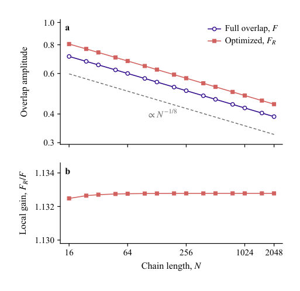
<figcaption class="paper-figure-caption"><b>Fig 1.</b> FIG. 1. Optimal local recovery preserves a critical orthog- onality exponent. For the connected sign-defect chain, the erased spins are the two adjacent to the central bond, M = {L, L + 1}. (a) Bare overlap FN and optimal amplitude FR, computed from the physical two-spin transition matrix. The dashed reference has exponent 1/8, established analytically in Eq. (11). (b) Their ratio approaches a finite enhancement in the displayed data. All 15 sizes from N = 16 to 2048 are shown; at the largest size FR/FN = 1.13278. Equation (12) bounds the ratio by 5 for every size, independently of this numerical trend.</figcaption>
</figure>
<figure class="paper-figure-card">
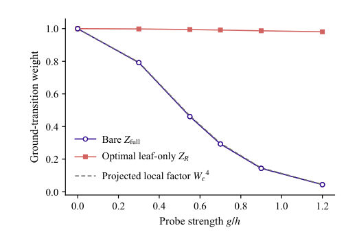
<figcaption class="paper-figure-caption"><b>Fig 2.</b> FIG. 2. A recoverable local record at finite mediator energy. Complete ground states of a periodic four-cell (12-spin) pen- dant chain give the bare transition weight Zfull = F 2 full and optimal leaf-only weight ZR = F 2 R. Parameters are K = 1, h = 40, j = 20, ϵ = 0.01, and a = 1.25001500016. At g/h = 1.2, Zfull = 0.04379 whereas ZR = 0.98099. The dashed curve, W 4 ϵ , is the squared overlap contributed by the four driven leaves in their conditional ground states, derived in the Supplemental Material. All displayed weights refer to this finite system.</figcaption>
</figure>
<figure class="paper-figure-card">
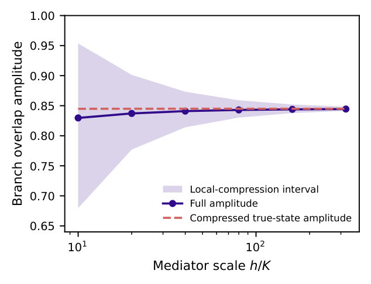
<figcaption class="paper-figure-caption"><b>Fig 3.</b> Figure 1: Evaluation of Eq. (S58) for the full four-cell model. Here j/h = 1, g/h = 0.55, K = 1, and the absolute mismatch jϵ = 0.2 is fixed; hence the relative mismatch changes with h. The nominal projected bulk field is a = p</figcaption>
</figure>
<figure class="paper-figure-card">
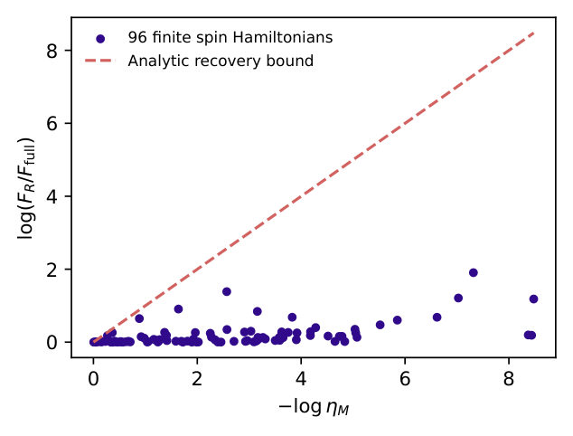
<figcaption class="paper-figure-caption"><b>Fig 4.</b> Figure 2: The logarithmic fidelity loss caused by reinstating the erased region lies below its proven local bound for 96 finite Hamiltonians. The line is an analytic bound, not a fit. The finite tests do not establish thermodynamic scaling or global sharpness; sharpness is proved by the product example in Sec. 3.1.</figcaption>
</figure>
</div>

<p><strong>Summary.</strong> This theoretical paper establishes fundamental bounds on how much quantum interference information can be recovered when only local measurements or controls are available. By analyzing critical quantum spin chains, the authors prove that the inherent critical orthogonality exponent remains invariant under optimal local recovery protocols. This work sets rigorous limits on the information extractable from a system when global control is impossible.</p>
<p><strong>Why it may be interesting.</strong> This work provides deep insights into the robustness of critical quantum phenomena against local perturbations, which is crucial for understanding quantum error correction and the limits of measurement in complex quantum many-body systems.</p>
<details>
<summary>Detailed structure</summary>
<p><strong>Main problem.</strong> The paper investigates the fundamental limit of interference recovery (quantum erasure) when only local control is available over a quantum system, specifically determining if optimal local recovery can alter critical orthogonality exponents.</p>
<p><strong>Main result.</strong> The authors prove that optimal local recovery cannot alter the critical orthogonality exponent, demonstrating that this exponent governs the collective limit of interference loss even when local control is applied.</p>
<p><strong>Method.</strong> The analysis employs rigorous mathematical bounds, including local amplitude-ratio bounds, comparison of full vs. recovered fidelity ($F_{	ext{full}}$ vs $F_R$), and techniques involving imaginary-time evolution and Cauchy product asymptotics.</p>
<p><strong>Model / system.</strong> The study focuses on quantum spin environments, exemplified by a connected critical Ising chain. The system is described by Hamiltonians involving local bias terms and is analyzed in the context of finite-region erasure.</p>
<p><strong>Key observables.</strong> Orthogonality exponent, fidelity ($F_{	ext{full}}$, $F_R$), recovery gain ($\Lambda_M$), and local component ratios.</p>
<p><strong>Important parameters / regimes.</strong> The critical exponent (e.g., $1/8$ for the Ising chain), the size of the controlled region ($|M|$), and local energy scales ($\Lambda_M$).</p>
<p><strong>Assumptions / limitations.</strong> The analysis assumes positive ground-state Hamiltonians and uniformly bounded ratios of local longitudinal bias to transverse field, and requires no gap in the environment.</p>
<p><strong>Figures summary.</strong> Figure 1 compares the bare overlap and optimized amplitude for a sign-defect chain, showing the preservation of the critical exponent. Figure 2 illustrates recoverable local records at finite mediator energy.</p>
<p><strong>Paper structure.</strong> The paper develops bounds by comparing full state overlaps to locally recovered states, deriving local amplitude-ratio bounds, and applying these to specific models like the Ising chain to prove the invariance of critical exponents.</p>
</details>
<details>
<summary>Abstract</summary>
<p>We prove a local amplitude-ratio bound for positive ground states and an explicit reverse comparison for fidelity under finite-region erasure. An exact lattice calculation for a connected critical Ising chain gives amplitude exponent $1/8$, preserved by arbitrary optimal control on any fixed spin set and, at the level of logarithmic exponents, on $o(\log N)$ spins. We derive the finite Cauchy product and its uniform strip asymptotics, and document exact two-spin optimization and an interferometric protocol for measuring the recovery. A separate finite-mediator theorem quantifies local compression and a decoder while retaining the rest of the environment exactly. We also give a ground-preparation Ramsey bound, counterexamples to stronger projected-state inferences, and independent full-Hamiltonian calculations.</p>
</details>
<p><sub><a href="#top">↑ back to top</a></sub></p>

<p><a id="paper-2609.40329"></a></p>
<h3 id="spectral-theory-for-dynamical-large-deviations-in-non-markov-self-interacting-processes"><a href="http://arxiv.org/abs/2609.40329v1">Spectral theory for dynamical large deviations in non-Markov self-interacting processes</a></h3>
<p><strong>Authors:</strong> Francesco Coghi, Juan P. Garrahan<br>
<strong>Type:</strong> theory · <strong>Category:</strong> statistical mechanics · <strong>PDF:</strong> <a href="https://arxiv.org/pdf/2609.40329v1">https://arxiv.org/pdf/2609.40329v1</a><br>
<strong>Analysis basis:</strong> full PDF text, analyzed in chunks
<strong>Topic relevance:</strong> <code>Keldysh / 2PI / non-Gaussian methods</code> <strong>3/5</strong> · <code>methods for driven-dissipative</code> <strong>3/5</strong> · <code>Full counting statistics</code> <strong>1/5</strong> · <code>analog quantum simulation</code> <strong>1/5</strong> · <code>correlated / nonlocal dissipation</code> <strong>1/5</strong> · <code>driven-dissipative phase transition</code> <strong>1/5</strong> · <code>non-equilibrium universality</code> <strong>1/5</strong> · <code>quantum measurements</code> <strong>1/5</strong></p>
<div class="figure-strip-hint">↔ Scroll figures horizontally</div>
<div class="paper-figures-scroll">
<figure class="paper-figure-card">
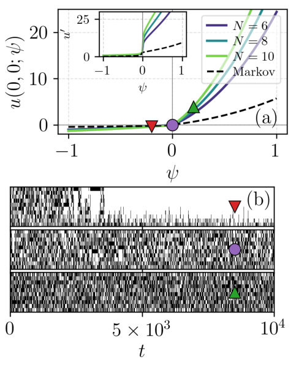
<figcaption class="paper-figure-caption"><b>Fig 1.</b> FIG. 1: (a) SCGF of the activity for the self-induced East model at N = 6, 8, 10, compared with the Markov East model at N = 10. In- set: derivative of the SCGF. The increasingly sharp change of slope with N signals an active–inactive dynamical transition, strongly en- hanced by the self-induced feedback. (b) Representative trajectories of the generalised Doob process for ψ = −0.2, 0, 0.2. Negative bias suppresses activity and progressively freezes the dynamics, while positive bias enhances the number of spin flips. The untilted trajec- tory corresponds to typical dynamics of the self-induced East model.</figcaption>
</figure>
</div>

<p><strong>Summary.</strong> This work establishes a spectral theory for calculating large deviations in complex, non-Markovian systems. By using a WKBJ Ansatz on the Feynman-Kac equation, the authors transform the problem into an eigenvalue problem governed by Hamilton-Jacobi characteristics. This provides a powerful, efficient tool for quantifying rare fluctuations in systems with memory effects, such as self-interacting jump processes.</p>
<p><strong>Why it may be interesting.</strong> The rigorous mathematical machinery developed—linking spectral theory, WKBJ methods, and Hamilton-Jacobi dynamics—is highly relevant for analyzing non-equilibrium dynamics in open quantum systems where memory effects are crucial.</p>
<details>
<summary>Detailed structure</summary>
<p><strong>Main problem.</strong> The paper develops a spectral theory to analyze dynamical large deviations in complex, non-Markovian, self-interacting processes.</p>
<p><strong>Main result.</strong> The problem is successfully recast as an eigenvalue problem for a tilted operator coupled to Hamilton-Jacobi characteristics, providing a computationally efficient framework for quantifying fluctuations.</p>
<p><strong>Method.</strong> The authors employ a multiscale Wentzel-Kramers-Brillouin-Jeffreys (WKBJ) Ansatz to solve the Feynman-Kac equation, reducing the dynamics to solving characteristic equations derived from a Hamilton-Jacobi framework.</p>
<p><strong>Model / system.</strong> The theory applies to non-Markov jump processes (SIJPs) and non-Markov chains (SIMCs) whose evolution depends on the system's history via empirical observables (memory). An example used is the bistable self-induced East model.</p>
<p><strong>Key observables.</strong> Empirical measure ($L_x$), empirical flux ($\Phi_{xy}$), Scaled Cumulant Generating Function (SCGF), and the rate function $I^*$.</p>
<p><strong>Important parameters / regimes.</strong> The memory variable $a$ and its conjugate momentum $P$, which govern the slow evolution of the system.</p>
<p><strong>Assumptions / limitations.</strong> The method relies on the WKBJ approximation, which separates fast configurational relaxation from slow memory evolution, and assumes the existence of a compact interval $K$ for the memory variable.</p>
<p><strong>Figures summary.</strong> Figure 1(a) compares the SCGF of the activity for the self-induced East model at various sizes ($N=6, 8, 10$) against the standard Markov East model.</p>
<p><strong>Paper structure.</strong> The paper builds the theory by first deriving the Feynman-Kac equation for the MGF, then applying the WKBJ Ansatz to transform it into an eigenvalue problem. This is subsequently linked to a Hamilton-Jacobi equation, whose characteristics govern the slow memory evolution, culminating in the calculation of the rate function via the SCGF.</p>
</details>
<details>
<summary>Abstract</summary>
<p>We develop a spectral theory for dynamical large deviations in non-Markov jump processes and non-Markov chains, whose dynamics depends on the past through state- and jump-dependent empirical observables. We demonstrate that a multiscale Wentzel-Kramers-Brillouin-Jeffreys (WKBJ) Ansatz separates fast configurational relaxation from slow memory evolution, reducing the Feynman--Kac equation for occupation and flux statistics to an eigenvalue problem for a new tilted operator coupled to Hamilton--Jacobi characteristics. This provides a computationally efficient framework for quantifying fluctuations in a broad class of non-Markovian systems. We illustrate our general results with a bistable self-induced East model.</p>
</details>
<p><sub><a href="#top">↑ back to top</a></sub></p>

<p><a id="paper-2609.38939"></a></p>
<h3 id="defect-aware-parallel-atom-reloading-protocol-for-neutral-atom-quantum-computers"><a href="http://arxiv.org/abs/2609.38939v1">Defect-Aware Parallel Atom Reloading Protocol for Neutral-Atom Quantum Computers</a></h3>
<p><strong>Authors:</strong> Koki Aoyama, Fumihiko Ino<br>
<strong>Type:</strong> theory · <strong>Category:</strong> quantum information and computing · <strong>PDF:</strong> <a href="https://arxiv.org/pdf/2609.38939v1">https://arxiv.org/pdf/2609.38939v1</a><br>
<strong>Analysis basis:</strong> full PDF text, analyzed in chunks
<strong>Topic relevance:</strong> <code>QC/QI experiment</code> <strong>3/5</strong> · <code>analog quantum simulation</code> <strong>3/5</strong> · <code>Rydberg arrays</code> <strong>2/5</strong> · <code>quantum measurements</code> <strong>2/5</strong> · <code>methods for driven-dissipative</code> <strong>1/5</strong></p>
<div class="figure-strip-hint">↔ Scroll figures horizontally</div>
<div class="paper-figures-scroll">
<figure class="paper-figure-card">
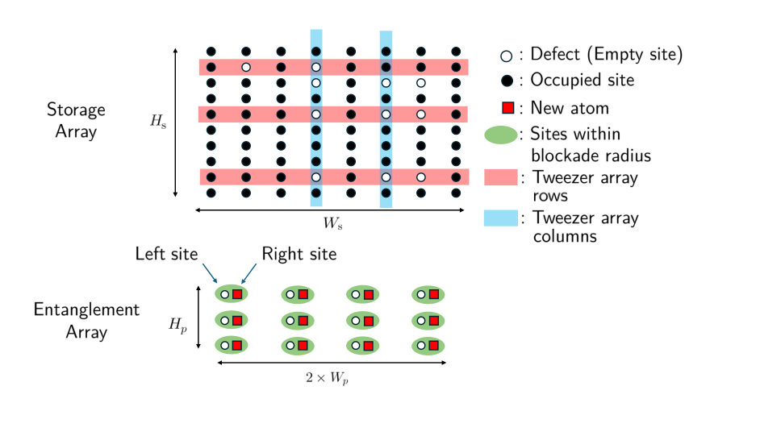
<figcaption class="paper-figure-caption"><b>Fig 1.</b> Figure 1 Schematic of the system model considered in this work. There are three components in the system: the storage atom array, the entanglement atom array, and the optical tweezer array. The storage array has Hs × Ws sites and holds atoms that store the intermediate computation data. Filled circles are sites occupied by atoms and open circles are defects, i.e., empty sites created by atom loss. The entanglement array consists of Hp × 2Wp sites grouped into Hp × Wp pairs. The two sites of a pair, referred to as the left site and the right site, are placed within the Rydberg blockade radius [18], whereas sites belonging to different pairs are placed outside the blockade radius. This...</figcaption>
</figure>
<figure class="paper-figure-card">
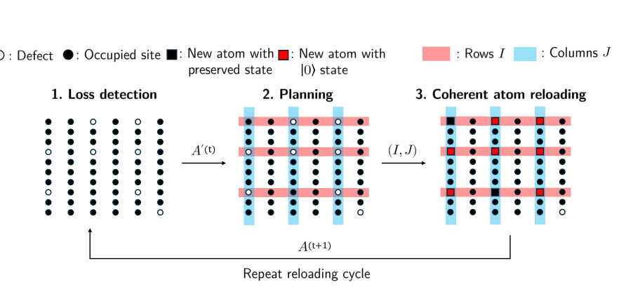
<figcaption class="paper-figure-caption"><b>Fig 2.</b> Figure 2 Overview of the proposed defect-aware atom reloading protocol. In step 1, the atom loss detection procedure locates the defects and yields the state A′(t). In step 2, the defect-aware planner determines the operation parameters (I, J) based on the current state A′(t). The operation parameters (I, J) are the row and column indices of the storage array to be replenished. Only the defects in the storage array specified by I ×J are replenished with atoms because the tweezers are generated by AODs. In step 3, the coherent parallel atom reloading operation replenishes the defects in I × J with new atoms in the default state |0⟩. The sites in I × J that already hold an atom are replaced...</figcaption>
</figure>
<figure class="paper-figure-card">
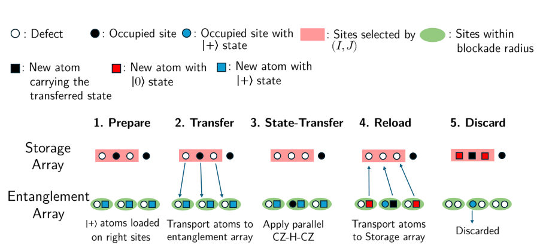
<figcaption class="paper-figure-caption"><b>Fig 3.</b> Figure 3 Overview of the coherent parallel atom-reloading operation. The operation takes two param- eters (I, J), which are the row and column indices of the storage array to be replenished. Each panel shows the state at the beginning of the corresponding operation, with the transport performed in that operation drawn as arrows. Step 1, the prepare operation, consists of the preparation operation followed by the H-gate operation and leaves a |+⟩atom on the right site of every pair. Steps 2 to 4 move the selected storage atoms into the left sites of the entanglement array, apply the parallel CZ-H-CZ sequence to transfer the data from the left sites to the right sites, and move the right-site...</figcaption>
</figure>
<figure class="paper-figure-card">
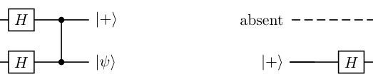
<figcaption class="paper-figure-caption"><b>Fig 4.</b> Figure 4 Quantum circuit of the parallel logical state-transfer operation. Figures 4(a) and 4(b) show the cases where the left-site qubit is present and absent, respectively. In Figure 4(a), the gate sequence CZ-H-CZ maps |ψ⟩|+⟩to |+⟩|ψ⟩, transferring the left-site qubit state to the right site and resetting the left site to |+⟩. In Figure 4(b), both CZ gates act as the identity because the interaction partner is absent, and only the H gate is applied to the right-site qubit, leaving it in the default |0⟩state.</figcaption>
</figure>
<figure class="paper-figure-card">
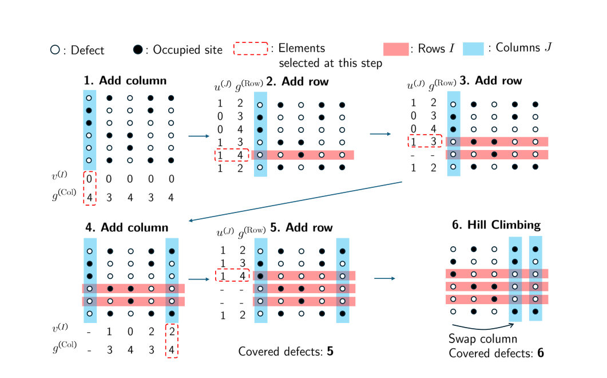
<figcaption class="paper-figure-caption"><b>Fig 5.</b> Figure 5 Step-by-step execution of the proposed defect-aware planner on a 6 × 5 instance with Hp = 3 and Wp = 2. Steps 1 to 5 show the greedy construction of Algorithm 1. Whether a row or a column is added is decided by the condition |I| · Wp &lt; |J| · Hp, which yields the order column, row, row, column, row for this instance. In each step, the elements with the largest u(J) or v(I) are chosen to maximize the number of covered defects. In case of a tie, the algorithm selects the row or column with the largest total defect count, given by (g(Row) i ) or (g(Col) j ), respectively, to encourage greater defect coverage in subsequent steps. These steps yield the greedy solution I = {3, 4, 5}, J =...</figcaption>
</figure>
</div>

<p><strong>Summary.</strong> This work proposes a defect-aware parallel protocol to efficiently reload atoms into the defect sites of neutral-atom quantum computers. By combining coherent quantum operations with a fast, optimized planning algorithm, the authors demonstrate a substantial increase in atom filling rates. This research is crucial for realizing fault-tolerant, continuous quantum computation by addressing resource depletion.</p>
<p><strong>Why it may be interesting.</strong> It directly tackles a major engineering bottleneck for scalable quantum computation—maintaining qubit connectivity and resource availability—by optimizing the physical resource management layer.</p>
<details>
<summary>Detailed structure</summary>
<p><strong>Main problem.</strong> The paper addresses the critical need to maintain high atom filling rates in neutral-atom quantum computers by developing an efficient protocol to reload atoms into defect sites.</p>
<p><strong>Main result.</strong> The proposed defect-aware protocol significantly improves the average atom filling rate (e.g., from 98.61% to 99.94% in low-noise conditions) while maintaining planning times fast enough for real-time operation.</p>
<p><strong>Method.</strong> The method combines a coherent atom reloading operation, which preserves quantum information, with a defect-aware planner that determines the optimal atom reloading pattern.</p>
<p><strong>Model / system.</strong> The system is a neutral-atom quantum computer utilizing a storage atom array and an entanglement atom array, connected by an optical tweezer array for atom transport.</p>
<p><strong>Key observables.</strong> Average atom filling rate, planning time.</p>
<p><strong>Important parameters / regimes.</strong> Array size (e.g., $36 	imes 90$), noise level (low/high).</p>
<p><strong>Assumptions / limitations.</strong> The protocol assumes a low-noise environment for peak performance demonstration; the planner's performance is compared against an exact Mixed Integer Programming (MIP) solver.</p>
<p><strong>Figures summary.</strong> Figure 1 schematically illustrates the system model, showing the Storage Array, Entanglement Array, and Tweezer Array, defining occupied sites and defects.</p>
<p><strong>Paper structure.</strong> The paper introduces the problem of atom loss, proposes the combined coherent operation and defect-aware planner, presents numerical results comparing performance against MIP solvers, and concludes on the feasibility of the protocol.</p>
</details>
<details>
<summary>Abstract</summary>
<p>In this work, we propose a defect-aware parallel atom reloading protocol that reloads atoms based on defect information to increase the atom filling rate. The proposed protocol is useful for neutral-atom quantum computers, where reloading atoms into the defects, or atom-loss positions, is mandatory for continuous operation against atom loss. Our protocol takes advantage of both parallelism and defect awareness to improve atom-reloading efficiency. The proposed protocol consists of the coherent atom reloading operation and the defect-aware planner. The former replenishes the defects with atoms preserving the quantum information coherently. This coherence allows us to adaptively choose the reloading strategy based on the current defect configuration. The latter determines the atom reloading pattern to efficiently replenish the defects. In numerical experiments assuming a low-noise environment, we confirmed that the average atom filling rate improved from 98.61% to 99.94% for a 36 x 90 atom array, matching the filling rate obtained with a mixed integer programming solver to within 0.001 percentage points while planning each reload in under 0.1 ms. These results demonstrate that defect-aware parallel reloading can achieve and sustain high atom filling rates while the performance of the defect-aware planner meets the real-time requirements of neutral-atom quantum computers.</p>
</details>
<p><sub><a href="#top">↑ back to top</a></sub></p>

<p><a id="paper-2609.40094"></a></p>
<h3 id="accelerating-quantum-dense-output-simulation-through-locality"><a href="http://arxiv.org/abs/2609.40094v1">Accelerating Quantum Dense-Output Simulation through Locality</a></h3>
<p><strong>Authors:</strong> Songqinghao Yang, Chang Liu, Junkai Wang, Jingxuan Zhang, Jin-Peng Liu<br>
<strong>Type:</strong> theory · <strong>Category:</strong> other · <strong>PDF:</strong> <a href="https://arxiv.org/pdf/2609.40094v1">https://arxiv.org/pdf/2609.40094v1</a><br>
<strong>Analysis basis:</strong> full PDF text, analyzed in chunks
<strong>Topic relevance:</strong> <code>analog quantum simulation</code> <strong>3/5</strong> · <code>methods for driven-dissipative</code> <strong>3/5</strong> · <code>Keldysh / 2PI / non-Gaussian methods</code> <strong>1/5</strong> · <code>correlated / nonlocal dissipation</code> <strong>1/5</strong> · <code>driven-dissipative phase transition</code> <strong>1/5</strong> · <code>quantum measurements</code> <strong>1/5</strong></p>
<div class="figure-strip-hint">↔ Scroll figures horizontally</div>
<div class="paper-figures-scroll">
<figure class="paper-figure-card">
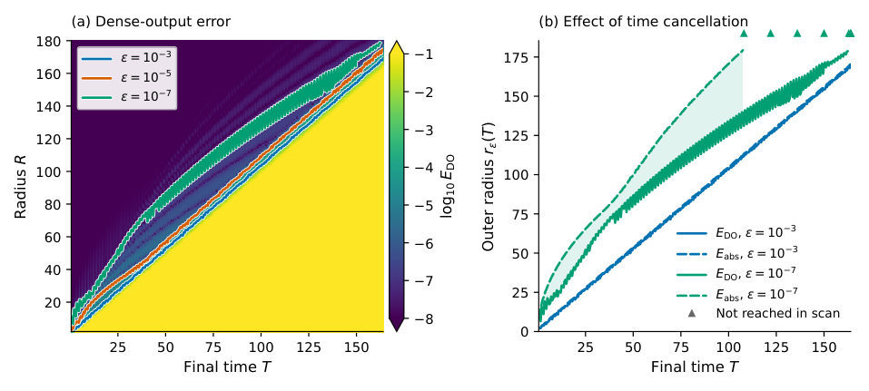
<figcaption class="paper-figure-caption"><b>Fig 1.</b> FIG. 1. Precision-dependent local reconstruction for a central single particle, with N = 441 and α = 3.</figcaption>
</figure>
<figure class="paper-figure-card">
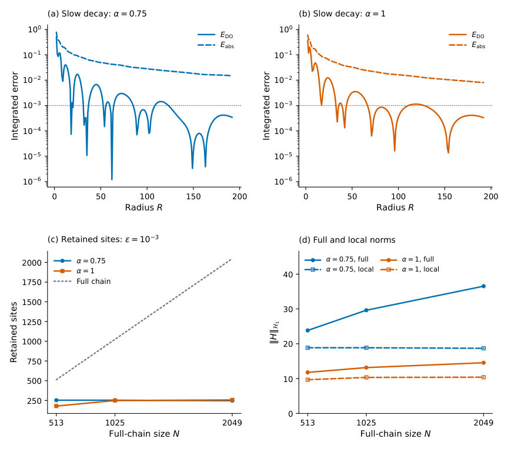
<figcaption class="paper-figure-caption"><b>Fig 2.</b> FIG. 2. Slow-decay single-particle reconstruction at T = 4. (a,b) EDO and Eabs for N = 2049, with the</figcaption>
</figure>
<figure class="paper-figure-card">

<figcaption class="paper-figure-caption"><b>Fig 3.</b> FIG. 3. Error requirements for the free-fermion model with N = 301, α = 3, and M = 4. (a,b) Fixed-state</figcaption>
</figure>
<figure class="paper-figure-card">
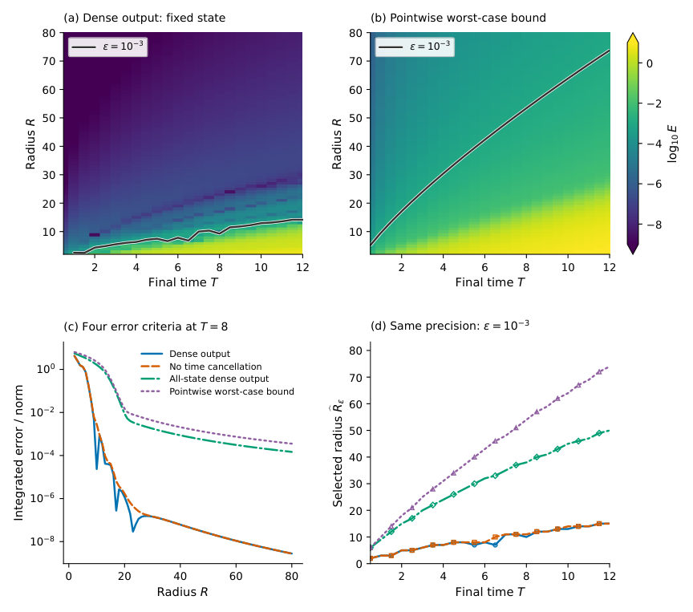
<figcaption class="paper-figure-caption"><b>Fig 4.</b> Figure 4(a) fixes V0 = 2 and compares the full dense output with restricted evolutions at</figcaption>
</figure>
<figure class="paper-figure-card">
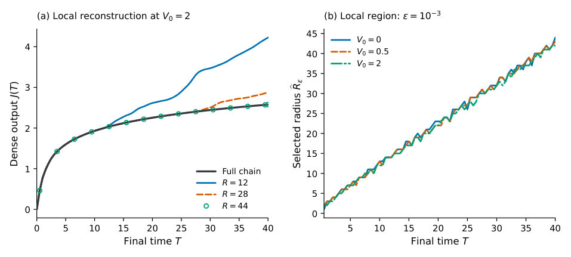
<figcaption class="paper-figure-caption"><b>Fig 5.</b> FIG. 4. Local reconstruction with density interactions for N = 161 and W(r) = V0r−3. (a) At fixed V0 = 2,</figcaption>
</figure>
</div>

<p><strong>Summary.</strong> This paper introduces a locality-based framework to accelerate the simulation of time-accumulated observables (dense outputs) in quantum many-body systems. By leveraging Lieb-Robinson bounds, the authors demonstrate that restricting the simulation to a local region around the observable is sufficient to achieve high accuracy. This significantly reduces computational resource requirements, making simulations of large, complex lattice models more feasible.</p>
<p><strong>Why it may be interesting.</strong> This work provides a crucial theoretical tool for simulating large, complex quantum systems by proving that local information access is sufficient for calculating time-integrated observables, which is vital for simulating dynamics in condensed matter systems.</p>
<details>
<summary>Detailed structure</summary>
<p><strong>Main problem.</strong> The paper addresses the challenge of efficiently estimating time-accumulated observables (dense outputs) in quantum simulations, which traditionally requires resources scaling with the full Hamiltonian norm.</p>
<p><strong>Main result.</strong> By developing a locality-based truncation framework utilizing Lieb-Robinson bounds, the authors show that local simulation resources can recover the dense output, leading to query complexity that can be independent of the total system size.</p>
<p><strong>Method.</strong> The core method involves spatially truncating the Hamiltonian to a local region and rigorously bounding the resulting error using Lieb-Robinson bounds, which are then translated into local-simulation query bounds.</p>
<p><strong>Model / system.</strong> The analysis applies to quantum many-body systems on a lattice, covering free and interacting fermionic and bosonic models, as well as open quantum systems governed by Lindbladians.</p>
<p><strong>Key observables.</strong> Dense Output: $\mathcal{J}_H(O) = \int_0^T \langle \psi(t)|O(t)|\psi(t)
angle dt$; Local-simulation query bounds.</p>
<p><strong>Important parameters / regimes.</strong> Evolution time $T$, target precision $\epsilon$, system size $N$, and the decay exponent $\alpha$ governing Hamiltonian locality.</p>
<p><strong>Assumptions / limitations.</strong> The analysis relies on the existence of spatial locality bounds (Lieb-Robinson bounds) and the ability to truncate the Hamiltonian while maintaining controlled error bounds.</p>
<p><strong>Figures summary.</strong> Figures illustrate the dependence of the required local region on simulation time and precision, and demonstrate the resource improvement by comparing local vs. full Hamiltonian norms.</p>
<p><strong>Paper structure.</strong> The paper establishes the problem of dense output estimation, introduces the locality-based truncation framework using LRBs, provides theoretical bounds for various lattice systems (fermions/bosons/open systems), and concludes with numerical verification and complexity analysis.</p>
</details>
<details>
<summary>Abstract</summary>
<p>Estimating time-accumulated observables, or dense outputs, is central to extracting classical information from quantum simulations. Whereas most quantum-simulation algorithms aim to reproduce a final state or a single-time expectation value, many applications require the integrated signal $J_H(O)=\int_0^T \langle ψ(t)|O(t)|ψ(t)\rangle\,dt$. Previous Hamiltonian-simulation-based dense-output algorithms have query costs that depend on the norm of the full Hamiltonian, which can grow with system size. However, one can naturally optimize the simulation algorithm when the system structure is known. Consequently, we develop a locality-based truncation framework for the dense-output problem on lattice Hamiltonians. By truncating the Hamiltonian and tightening the resulting error with Lieb-Robinson bounds, we show that a local simulation can recover the dense output. We bound the quantum simulation error from spatial truncation and translate it into local-simulation query bounds. Our analysis includes free and interacting systems for both fermions and bosons, as well as open quantum systems governed by Lindbladians. The improvement from our truncation algorithm varies from constant to unbounded as the system size grows. We also give example applications and conduct relevant numerical experiments to support our findings.</p>
</details>
<p><sub><a href="#top">↑ back to top</a></sub></p>

<p><a id="paper-2609.39654"></a></p>
<h3 id="cynar-a-trajectory-based-estimator-of-entropy-production"><a href="http://arxiv.org/abs/2609.39654v1">CYNAR: a trajectory-based estimator of entropy production</a></h3>
<p><strong>Authors:</strong> Marco Baiesi, Ivan DI Terlizzi<br>
<strong>Type:</strong> theory · <strong>Category:</strong> statistical mechanics · <strong>PDF:</strong> <a href="https://arxiv.org/pdf/2609.39654v1">https://arxiv.org/pdf/2609.39654v1</a><br>
<strong>Analysis basis:</strong> full PDF text, analyzed in chunks
<strong>Topic relevance:</strong> <code>methods for driven-dissipative</code> <strong>3/5</strong> · <code>quantum measurements</code> <strong>3/5</strong> · <code>Keldysh / 2PI / non-Gaussian methods</code> <strong>1/5</strong> · <code>correlated / nonlocal dissipation</code> <strong>1/5</strong> · <code>driven-dissipative phase transition</code> <strong>1/5</strong> · <code>non-equilibrium universality</code> <strong>1/5</strong></p>
<div class="figure-strip-hint">↔ Scroll figures horizontally</div>
<div class="paper-figures-scroll">
<figure class="paper-figure-card">
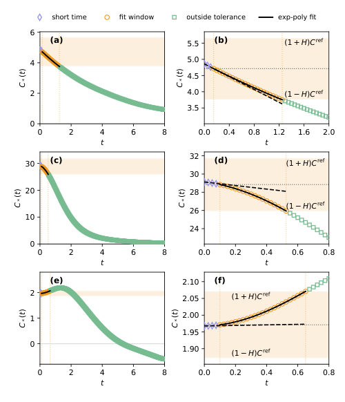
<figcaption class="paper-figure-caption"><b>Fig 1.</b> FIG. 1. Traffic-fit illustration. Symbols indicate each raw C∗(t): excluded lags k &lt; k1 (diamonds), fit window [tk1, tk2] (circles), and later lags (squares). The reference Cref ≡C∗(tk1) is compared to tolerance H; the shaded band (1 ± H)Cref defines tk2. The black curve is the exp-poly fit (26); its slope at t = 0 (dashed) gives ˙C∗(0+) = −Dij. (a)-(b) equilibrium-like (left: full range; right: zoom on fit window), (c)-(d) nonequilibrium, (e)-(f) Dij = 0.</figcaption>
</figure>
<figure class="paper-figure-card">

<figcaption class="paper-figure-caption"><b>Fig 2.</b> FIG. 3. As in Fig. 2 but for the Brownian vortex at a nonequi- librium point Φ = 2 (true σ = 4.8).</figcaption>
</figure>
<figure class="paper-figure-card">
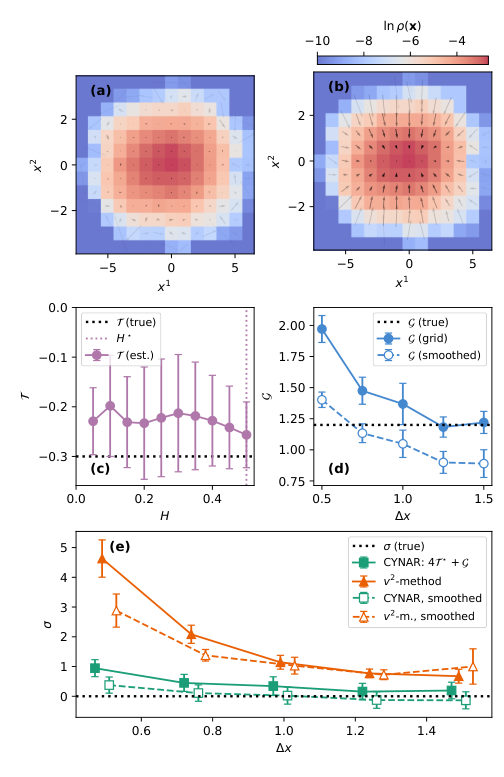
<figcaption class="paper-figure-caption"><b>Fig 3.</b> FIG. 2. Brownian vortex at the equilibrium point Φ = 0 (true σ = 0). (a) Reconstructed local mean velocity v(x) and (b) score s(x), overlaid as vector fields on the log-density ln ρ(x), obtained with cell size ∆x = 1. (c) Traffic estimate versus the fit-window tolerance H (Sec. II F), used to select the most stable T ⋆. (d) Raw and smoothed inflow rate G(∆x) against its true value, versus the inflow-rate grid’s cell size ∆x. (e) CYNAR (4T ⋆+ G) versus the v2 method, both raw and smoothed, against the true σ, versus ∆x.</figcaption>
</figure>
<figure class="paper-figure-card">
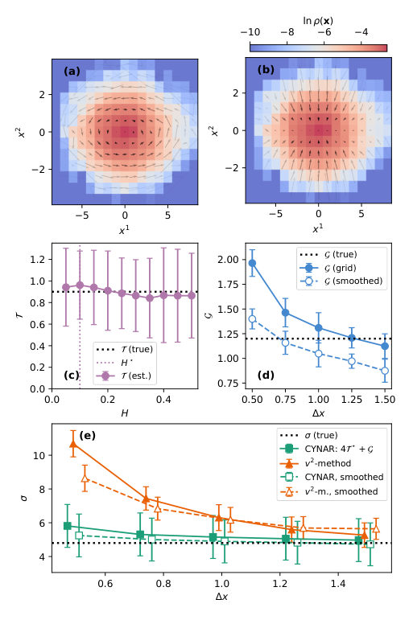
<figcaption class="paper-figure-caption"><b>Fig 4.</b> Fig. 2(c) plots the traffic estimate as a function of the fit-window tolerance H, highlighting H⋆where the es- timate is most stable over independent trajectories and where we get T ⋆= −0.26 ± 0.07, compatible with the true T = −0.3. In Fig. 2(d), we show the reconstruc- tion of raw and smoothed inflow rate G(∆x) for cell size ∆x ∈[0.5, 1.5]. Both estimates are close to the true value G = 1.2 and decrease as ∆x grows, which is ex- pected for an information-theoretic quantity estimated in coarser partitions. For a similar reason, information loss from smoothing also yields smaller values at the same ∆x. Fig. 2(e) combines these into σ = 4T ⋆+ G(∆x) ver- sus σv2(∆x), raw and smoothed, and...</figcaption>
</figure>
<figure class="paper-figure-card">
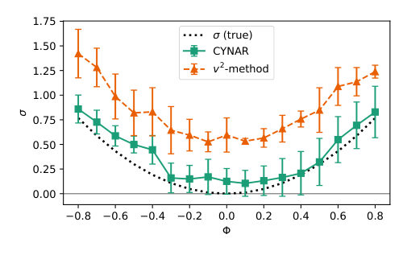
<figcaption class="paper-figure-caption"><b>Fig 5.</b> FIG. 4. For the Brownian vortex, CYNAR and v2 method estimates of σ (both using the smoothed inflow rate/local mean velocity) vs. the nonequilibrium strength Φ, compared to the exact σ(Φ) (dotted). We use ∆x = 1 and the same parameters as in previous figures.</figcaption>
</figure>
</div>

<p><strong>Summary.</strong> This paper introduces CYNAR, a novel computational pipeline designed to estimate the entropy production rate ($\sigma$) from noisy, partially observed trajectories in non-equilibrium systems. It achieves this by decomposing $\sigma$ into a 'traffic' term derived from correlation function curvature and an 'inflow rate' from the steady-state score. CYNAR is shown to be significantly more robust and theoretically sound than existing methods, making it valuable for analyzing complex stochastic dynamics.</p>
<p><strong>Why it may be interesting.</strong> The rigorous statistical framework for estimating non-equilibrium quantities like entropy production is crucial for understanding dissipation in open quantum systems and quantum thermodynamics, providing a powerful tool for analyzing measurement data.</p>
<details>
<summary>Detailed structure</summary>
<p><strong>Main problem.</strong> The core challenge is accurately inferring the entropy production rate ($\sigma$) from recorded system trajectories, especially when the underlying physical forces are unknown or only partial measurements are available.</p>
<p><strong>Main result.</strong> The proposed CYNAR estimator provides a more reliable, unbiased, and robust method for estimating $\sigma$ compared to standard current-based approaches, particularly under partial observation.</p>
<p><strong>Method.</strong> CYNAR estimates $\sigma$ using a kinetic decomposition: $\sigma = 4T + G$, where $T$ (Traffic) is derived from the short-time curvature of correlation functions, and $G$ (Inflow Rate) is computed from the steady-state score function.</p>
<p><strong>Model / system.</strong> The analysis is based on overdamped stochastic differential equations ($\dot{x}_t = a(x_t) + \sqrt{2D} \xi_t$) describing systems in non-equilibrium steady states (NESS).</p>
<p><strong>Key observables.</strong> Entropy production rate ($\sigma$), probability current ($J$), local mean velocity ($v(x)$), connected correlation matrix $C(t)$, and the score function $s(x) = 
abla\ln 
ho(x)$.</p>
<p><strong>Important parameters / regimes.</strong> Diffusion tensor ($D$), system dimensionality, and the degree of observation completeness (partial observation).</p>
<p><strong>Assumptions / limitations.</strong> The dynamics are assumed to follow general overdamped diffusive processes, and the decomposition $\sigma = 4T + G$ is utilized.</p>
<p><strong>Paper structure.</strong> The paper introduces the CYNAR pipeline, details the kinetic decomposition ($\sigma = 4T + G$), compares its performance against standard probability current estimation methods on various complex systems, and highlights the superior robustness and theoretical advantages of the CYNAR approach.</p>
</details>
<details>
<summary>Abstract</summary>
<p>Inferring the entropy production rate $σ$ from recorded trajectories is a key challenge in stochastic thermodynamics. In experiments, the forces governing the dynamics are usually unknown and often only some of the system's degrees of freedom can be observed. Building on a recently introduced method [I. Di Terlizzi, Phys. Rev. Lett. 135, 237101 (2025)], we develop and validate CYNAR (computation yields nonequilibrium analysis and reconstruction), a pipeline that estimates $σ$ from trajectories. It exploits a kinetic decomposition of $σ$ into a traffic term ${\cal T}$, inferred from the short-time curvature of correlation functions, and an inflow rate ${\cal G}$, computed from the steady-state score, i.e., the gradient of the log-density. We show that the same decomposition, evaluated on any subset of observed coordinates, always bounds $σ$ from below, for any diffusion tensor and without knowledge of the hidden degrees of freedom. We then compare CYNAR with a more standard approach that estimates $σ$ from steady-state probability currents, on four systems of increasing complexity. CYNAR proves to be more reliable, with no detectable bias close to equilibrium, weak dependence on spatial discretization, and marked robustness to measurement noise. It is also readily applicable to high-dimensional systems, where the traffic alone provides a lower bound close to $σ$, and remains informative under partial observation, including cases where the flux-based estimate vanishes identically. CYNAR is provided as an open-source Python package.</p>
</details>
<p><sub><a href="#top">↑ back to top</a></sub></p>

<p><a id="paper-2609.40142"></a></p>
<h3 id="fluctuation-induced-ionic-friction-at-solid-electrolyte-interfaces"><a href="http://arxiv.org/abs/2609.40142v1">Fluctuation-induced ionic friction at solid-electrolyte interfaces</a></h3>
<p><strong>Authors:</strong> Damien Toquer, Baptiste Coquinot, Nikita Kavokine, Lydéric Bocquet<br>
<strong>Type:</strong> theory · <strong>Category:</strong> statistical mechanics · <strong>PDF:</strong> <a href="https://arxiv.org/pdf/2609.40142v1">https://arxiv.org/pdf/2609.40142v1</a><br>
<strong>Analysis basis:</strong> full PDF text, analyzed in chunks
<strong>Topic relevance:</strong> <code>Frenkel-Kontorova</code> <strong>3/5</strong> · <code>correlated / nonlocal dissipation</code> <strong>3/5</strong> · <code>Keldysh / 2PI / non-Gaussian methods</code> <strong>2/5</strong> · <code>methods for driven-dissipative</code> <strong>2/5</strong></p>
<div class="figure-strip-hint">↔ Scroll figures horizontally</div>
<div class="paper-figures-scroll">
<figure class="paper-figure-card">
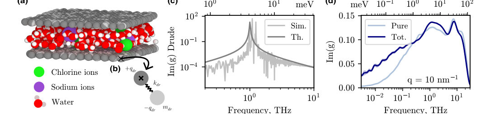
<figcaption class="paper-figure-caption"><b>Fig 1.</b> FIG. 1. Simulation setup and response functions. (a) Slice of the simulation box used in this paper. Chlorine ions are in green, sodium ions are in purple. (b) Drude polarizable model for the wall. All wall carbon atoms (core atoms) are given a positive charge Qdr, and we attach a mobile counter charge −Qdr (Drude atoms), of mass mdr with a spring of stiffness Kdr. (c) (Light gray) Imaginary part of the surface response function of a single wall of Drude atoms. (Gray) Theoretical prediction (Eq. (7)). (d) Imaginary part of the surface response function (Eq. (2)) of pure (light blue) and of an electrolyte at 6.4 mol/L (blue) as a function of the frequency.</figcaption>
</figure>
<figure class="paper-figure-card">
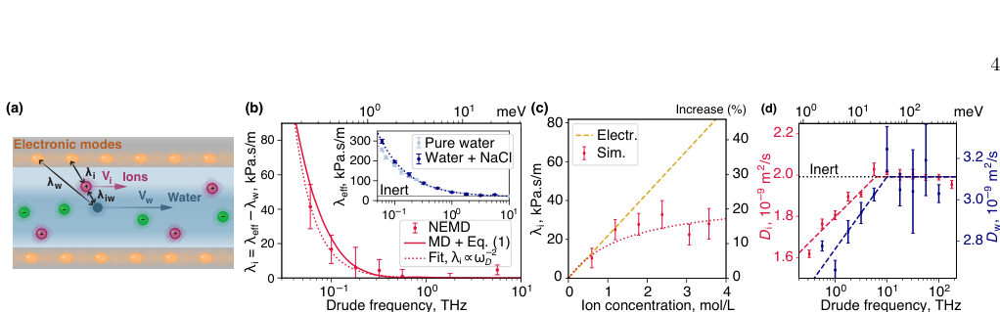
<figcaption class="paper-figure-caption"><b>Fig 2.</b> FIG. 2. Ionic friction. (a) Sketch of the various contributions to friction for a flowing electrolyte confined between two solids. Water (velocity vw) undergoes a friction drag by the solid (friction λw), as well as by the ions (friction λiw). The ions (velocity vi) undergo a friction drag by the solid (friction λi) and by water (friction λiw). (b) Enhancement λi = λeff −λw of solid–liquid friction between an electrolyte at 6.4 M and pure water obtained from non-equilibrium simulations (Red point) and from equilibrium simulations together with the fluctuation–induced friction formula Eq. (1) (Red line). Here, λw was estimated from pure water simulations. (Red dotted lines) ∝ 1 ω2 D fit....</figcaption>
</figure>
<figure class="paper-figure-card">
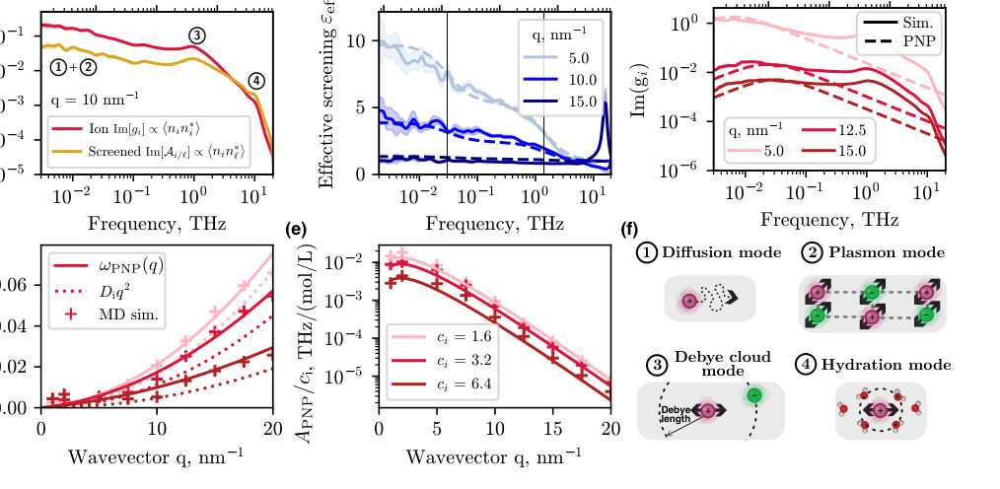
<figcaption class="paper-figure-caption"><b>Fig 3.</b> FIG. 3. Ionic excitation modes. (a) Imaginary part of the surface response function of ions, Im [gi(q, ω)] obtained from the correlation function ⟨nin∗ i ⟩(red) and of the cross-spectral function, Im  Ai/ℓ(q, ω)  obtained from the cross-correlation function ⟨nin∗ ℓ⟩(yellow), as a function of the frequency at wavevector q = 10 nm−1. (b) (Solid lines) Effective permittivity extracted from simulations for various wavenumbers with ci = 6.4 mol/L. (Dashed lines) Result of the fit (see text). (c) Ionic spectrum Im [gi(q, ω)] (solid lines) versus frequency and for various wavevectors, together with the predictions of the PNP model, Eqs. (29)–(31) (dashed lines). (d) and (e) Respectively the peak...</figcaption>
</figure>
<figure class="paper-figure-card">
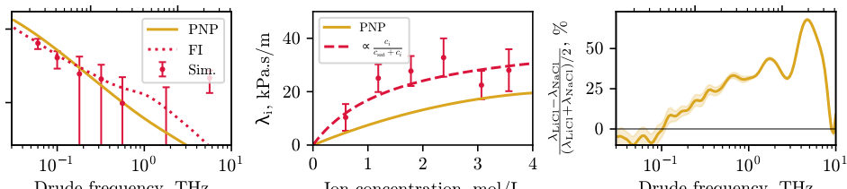
<figcaption class="paper-figure-caption"><b>Fig 4.</b> FIG. 4. Theoretical prediction of friction. (a) Comparison between the fluctuation-induced ionic friction Eq. (19) using the simulation spectrum (red dotted line), the prediction using a screened PNP mode Eq. (29) (yellow solid line) and the direct non-equilibrium simulation (red dot) at various Drude frequencies, with ci = 6.4 mol/L. (b) Scaling of the prediction of the fluctuation-induced ionic friction with the ionic concentration from our PNP model (yellow solid line, more detail in SM Sec. 6.1 and 7.3) with the results from NEMD simulations (red dots). The red dotted line is fitted from the theoretical approximation λ(c) = δλc c+csat , δλ = 42 kPa.s/m and csat = 1 2πlBdtoth = 1.49 M,...</figcaption>
</figure>
<figure class="paper-figure-card">
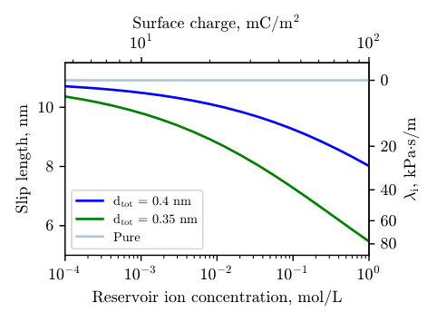
<figcaption class="paper-figure-caption"><b>Fig 5.</b> FIG. 5. Impact of the ion-wall distance and of ph- ysisorbed ions. Predicted slip length beff (left axis) and ionic friction coefficient (right axis) as a function of the reser- voir salt concentration cs for different distances dtot to the walls. (blue) Distance obtained in our simulations. (green) Ions closer to the wall by 0.05 nm. Here, we used Σ = 100 mC/m2 at cs = 1 M and Σ ∝c1/3 s . For the bare friction we used λw = 78 kPa.s/m extracted from the fluctuation-induced friction of pure water, and not the friction from our NEMD simulation, as it better matches predictions close to an inter- face (see SM. Sec. 6.2 and Ref. [17, 52]).</figcaption>
</figure>
</div>

<p><strong>Summary.</strong> This paper quantifies how thermal fluctuations in a solid substrate enhance the friction experienced by ions in an electrolyte confined at the interface. By combining molecular dynamics with fluctuation-dissipation theory, the authors show that collective ionic modes dominate this friction, suggesting that understanding these many-body effects is key for applications like desalination and energy conversion.</p>
<p><strong>Why it may be interesting.</strong> The work provides a detailed theoretical framework for calculating friction arising from collective many-body fluctuations, which is highly relevant to understanding energy dissipation in confined quantum systems or interfaces where many-body correlations are crucial.</p>
<details>
<summary>Detailed structure</summary>
<p><strong>Main problem.</strong> The paper investigates how the internal thermal fluctuations of a solid substrate affect the friction experienced by ions moving through an electrolyte confined at the solid-electrolyte interface.</p>
<p><strong>Main result.</strong> The ionic contribution to the interfacial friction is dominated by collective ionic modes, indicating that the friction arises from many-body interactions rather than simple individual drag forces.</p>
<p><strong>Method.</strong> The authors combine theoretical modeling using the Fluctuation-Dissipation Theorem (FDT) with molecular dynamics simulations to calculate the fluctuation-induced friction coefficient.</p>
<p><strong>Model / system.</strong> The system is a solid-electrolyte interface, modeled using a 2D nanochannel containing an electrolyte (e.g., NaCl). Solid excitations are incorporated via Drude oscillators, and the liquid response is derived from charge-density dynamical structure factors.</p>
<p><strong>Key observables.</strong> Interfacial friction coefficient ($\lambda_{	ext{eff}}$), solid and liquid surface response functions ($ ext{Im}[g_{ ext{dr}}]$, $   ext{Im}[g_{\ell}]$), and the ionic contribution to friction ($\lambda_{   ext{FI}}$).</p>
<p><strong>Important parameters / regimes.</strong> Low-frequency regime, high-frequency molecular modes, and electrolyte concentration (e.g., 6.4 M NaCl).</p>
<p><strong>Assumptions / limitations.</strong> The non-equilibrium MD approach is preferred over Green-Kubo methods due to rapid force auto-correlation decay, and the analysis relies on perturbation theory involving spectral overlaps.</p>
<p><strong>Figures summary.</strong> Figures illustrate the simulation setup, the comparison of $   ext{Im}[g_{ ext{dr}}]$ and $    ext{Im}[g_{\ell}]$ for pure water versus electrolyte, and plots showing the calculated effective friction coefficient enhancement.</p>
<p><strong>Paper structure.</strong> The paper progresses by establishing the theoretical framework using FDT and perturbation theory, calculating the friction enhancement, and then comparing results from different theoretical models (like Debye-cloud and hydration modes) against non-equilibrium molecular dynamics simulations.</p>
</details>
<details>
<summary>Abstract</summary>
<p>In this article, we explore how transport at a solid--electrolyte interface is affected by the internal fluctuations of the solid and quantify the role of solid excitations on ionic friction. Combining molecular dynamics simulations with theoretical modeling, we show that the presence of ions enhances the dynamical response of the electrolyte compared to pure water. This leads to an ionic contribution to the fluctuation-induced interfacial friction. We show that collective ionic modes dominate the dissipation, such that ionic friction arises from many-body effects rather than from individual drag forces. Furthermore, high-frequency molecular modes are found to be ion-specific, suggesting possible routes toward spectral separation of ions, with implications for desalination, filtration, and energy conversion.</p>
</details>
<p><sub><a href="#top">↑ back to top</a></sub></p>

<p><a id="paper-2609.39482"></a></p>
<h3 id="generation-of-large-amplitude-squeezed-cat-states-with-near-unity-efficiency"><a href="http://arxiv.org/abs/2609.39482v1">Generation of large-amplitude squeezed cat states with near-unity efficiency</a></h3>
<p><strong>Authors:</strong> Simon K. Yung, Matthew S. Winnel, Timothy C. Ralph, Jie Zhao<br>
<strong>Type:</strong> both · <strong>Category:</strong> quantum information and computing · <strong>PDF:</strong> <a href="https://arxiv.org/pdf/2609.39482v1">https://arxiv.org/pdf/2609.39482v1</a><br>
<strong>Analysis basis:</strong> full PDF text, analyzed in chunks
<strong>Topic relevance:</strong> <code>quantum measurements</code> <strong>3/5</strong> · <code>quantum optics experiment</code> <strong>3/5</strong> · <code>methods for driven-dissipative</code> <strong>2/5</strong> · <code>QC/QI experiment</code> <strong>1/5</strong> · <code>analog quantum simulation</code> <strong>1/5</strong></p>
<div class="figure-strip-hint">↔ Scroll figures horizontally</div>
<div class="paper-figures-scroll">
<figure class="paper-figure-card">
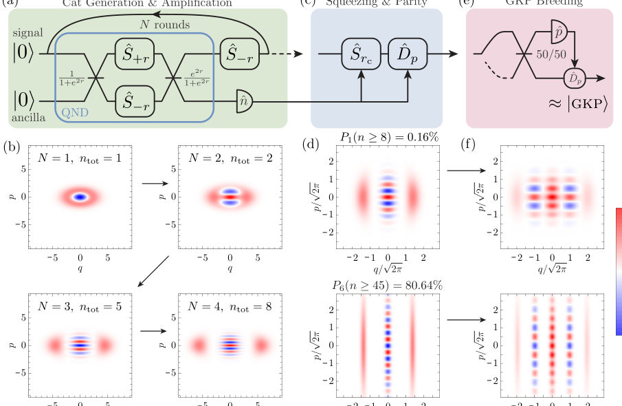
<figcaption class="paper-figure-caption"><b>Fig 1.</b> FIG. 1. Preparation of large-amplitude cat states compatible with GKP breeding schemes. (a) Cat generation based on a measurement-induced cat amplifier. In the first round, vacuum signal and ancilla modes are mixed via a QND interaction, after which the signal mode has its q-quadrature anti-squeezed. A measurement of n photons in the ancillary mode heralds an approximate cat state |C(√n, n)⟩at the output. The interaction can be repeated, using a new vacuum ancilla, to amplify the signal cat. After N rounds with ntot total detected photons, the final state approximates |C(√ntot, ntot)⟩, independent of the photon-numbers detected in each round. (b) Wigner functions for an example 4-round...</figcaption>
</figure>
<figure class="paper-figure-card">
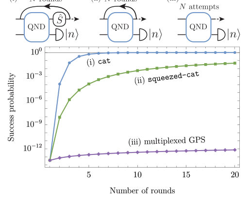
<figcaption class="paper-figure-caption"><b>Fig 2.</b> FIG. 2. Success probabilities for different schemes: (i) re- peated cat amplification; (ii) repeated squeezed-cat am- plification; (iii) multiplexed generalised photon subtraction (GPS), where the number of rounds is used to mean the num- ber of instances of GPS, for even comparison. The success threshold is set to nt = 45, and 6 dB of squeezing is used.</figcaption>
</figure>
<figure class="paper-figure-card">
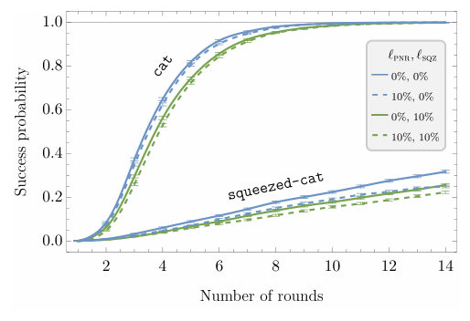
<figcaption class="paper-figure-caption"><b>Fig 3.</b> FIG. 3. Cat preparation success probabilities including pho- ton loss. Upper: cat protocol; Lower: squeezed-cat pro- tocol. The number threshold is nt = 9, and the differ- ent line styles denote the probabilities with and without losses associated with the PNR detectors (ℓpnr) and squeezers (ℓsqz). The error bars denote one binomial standard error, p</figcaption>
</figure>
<figure class="paper-figure-card">
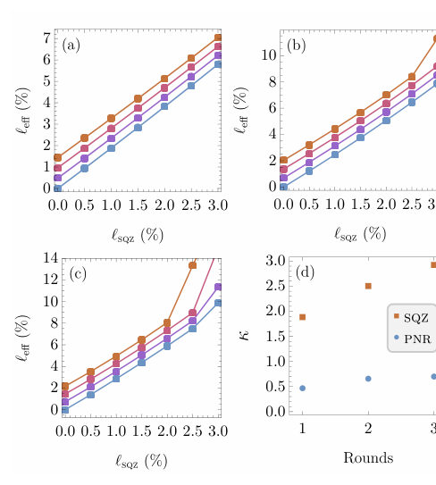
<figcaption class="paper-figure-caption"><b>Fig 4.</b> FIG. 4. Effective loss of output cat states. (a)–(c) Effective losses after one, two, and three rounds, respectively. The effective loss is presented as a function of the squeezer loss ℓsqz, with trends for different PNR detector loss ℓpnr in order ℓpnr = 0.0%, 1.0%, 2.0%, 3.0%, from bottom to top. The effective loss is a weighted average over PNR outcomes with up to 9 total photons. (d) Effective loss coefficients κpnr and κsqz for different rounds, fitted from the linear regime up to ℓsqz = 2%.</figcaption>
</figure>
</div>

<p><strong>Summary.</strong> This paper presents an all-optical, iterative scheme to deterministically generate large-amplitude squeezed cat states, which are vital resource states for fault-tolerant quantum computation using the GKP code. By employing quantum non-demolition interactions and photon-number measurements, the method achieves near-unity preparation probability and remains robust against photon loss. This paves a more realistic path toward implementing bosonic quantum error correction in photonic systems.</p>
<p><strong>Why it may be interesting.</strong> This work directly addresses the hardware bottleneck for continuous-variable quantum computing by providing a high-fidelity, scalable method for generating necessary resource states (cat states) in photonics.</p>
<details>
<summary>Detailed structure</summary>
<p><strong>Main problem.</strong> The primary challenge is deterministically preparing large-amplitude squeezed cat states, which are crucial resource states for fault-tolerant quantum computation using the Gottesman-Kitaev-Preskill (GKP) code.</p>
<p><strong>Main result.</strong> The authors propose an all-optical, iterative scheme that achieves the preparation of large-amplitude cat states with near-unity probability and demonstrates robustness against realistic photon loss.</p>
<p><strong>Method.</strong> The scheme utilizes repeated quantum non-demolition (QND) interactions and photon-number measurements to amplify the initial cat state deterministically.</p>
<p><strong>Model / system.</strong> The work is situated in photonic quantum computation, focusing on generating cat states via iterative amplification loops involving QND interactions and photon-number resolving (PNR) detectors.</p>
<p><strong>Key observables.</strong> Fidelity ($F$) of the output state relative to the ideal cat state, success probability ($P_{	ext{success}}$) of reaching a photon number threshold ($n_t$), and effective squeezing metrics for GKP breeding.</p>
<p><strong>Important parameters / regimes.</strong> The number of amplification rounds ($N$), the level of photon loss ($\ell$), and the required squeezing level ($r$) are key parameters analyzed.</p>
<p><strong>Assumptions / limitations.</strong> The analysis assumes the feasibility of high-efficiency QND interactions and PNR detection, and models the process by tracing over measured modes.</p>
<p><strong>Figures summary.</strong> Figures illustrate the process flow, Wigner functions of the generated states, and comparative plots showing success probabilities and effective loss scaling for different amplification schemes.</p>
<p><strong>Paper structure.</strong> The paper develops the theory by first proposing the iterative QND amplification scheme, then deriving the fidelity and success probabilities analytically, and finally applying these results to quantify the required squeezing for GKP state preparation.</p>
</details>
<details>
<summary>Abstract</summary>
<p>The Gottesman-Kitaev-Preskill encoding has emerged as a leading candidate for fault-tolerant quantum computation with continuous variables. For photonic architectures, the major challenge is preparing high-quality resource states, which can be deterministically synthesised from many large-amplitude cat states. Thus far, only modest-sized optical cat states have been prepared experimentally, and the implemented methods are highly probabilistic. We propose an all-optical scheme utilising quantum non-demolition interactions and photon-number measurements to prepare large-amplitude cat states with near-unity probability. Importantly, no particular photon-number outcome is postselected: all outcomes contribute to the accumulated photon number, with the protocol repeated until a required threshold is reached. We demonstrate that the scheme is robust to realistic levels of photon-loss, the dominant source of error in optical systems. Our results highlight the power of active Gaussian operations for state preparation and pave the way for efficient quantum error correction using bosonic codes.</p>
</details>
<p><sub><a href="#top">↑ back to top</a></sub></p>

<p><a id="paper-2609.39861"></a></p>
<h3 id="reverse-quantum-state-diffusion-from-differential-geometry"><a href="http://arxiv.org/abs/2609.39861v1">Reverse quantum state diffusion from differential geometry</a></h3>
<p><strong>Authors:</strong> Dinh-Long Vu, Patrick Rebentrost<br>
<strong>Type:</strong> theory · <strong>Category:</strong> other · <strong>PDF:</strong> <a href="https://arxiv.org/pdf/2609.39861v1">https://arxiv.org/pdf/2609.39861v1</a><br>
<strong>Analysis basis:</strong> full PDF text, analyzed in chunks
<strong>Topic relevance:</strong> <code>methods for driven-dissipative</code> <strong>3/5</strong> · <code>quantum measurements</code> <strong>3/5</strong> · <code>Keldysh / 2PI / non-Gaussian methods</code> <strong>2/5</strong> · <code>correlated / nonlocal dissipation</code> <strong>1/5</strong> · <code>driven-dissipative phase transition</code> <strong>1/5</strong></p>
<div class="figure-strip-hint">↔ Scroll figures horizontally</div>
<div class="paper-figures-scroll">
<figure class="paper-figure-card">
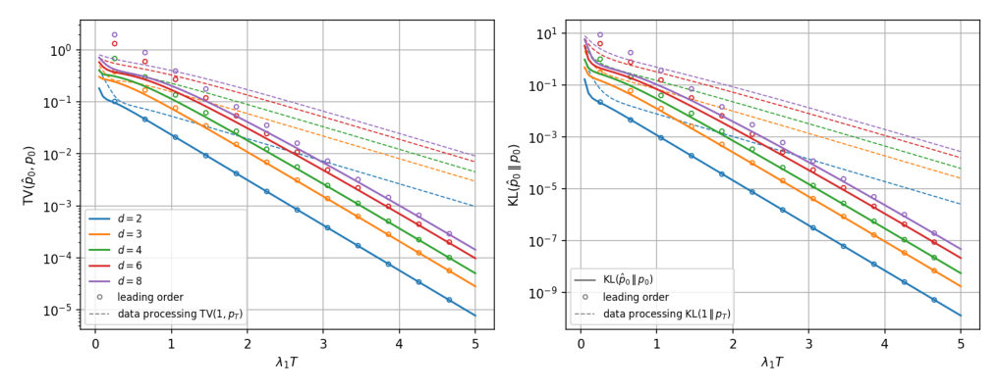
<figcaption class="paper-figure-caption"><b>Fig 1.</b> Figure 1: Forgetting the prior: depolarizing channel, γ = 1/4, smooth initial ensemble (80), backward SDE with the exact score started from the uniform prior q = 1. Colours indicate the dimension d. Left: TV(ˆp0, p0) (solid lines), the leading term of (57) (circles) and the data-processing bound TV(1, pT ) (dashed). Right: the same for the relative entropy, with KL(ˆp0 ∥p0), the leading term of (58) and KL(1 ∥pT ). All as functions of λ1T with λ1 = 2γd.</figcaption>
</figure>
<figure class="paper-figure-card">
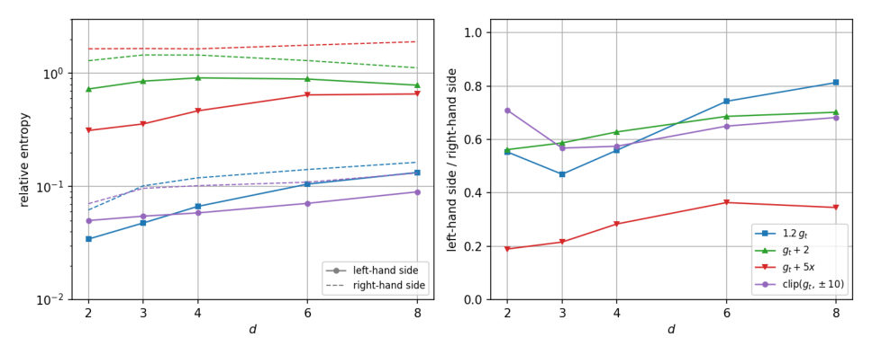
<figcaption class="paper-figure-caption"><b>Fig 2.</b> Figure 2: Learned score, continuous time: depolarizing channel, γ = 1/4, smooth initial ensemble (80), T = 1, q = 1, learned scores sk = gs t ∂Bkx. Colours and markers indicate the function gs t , as in the legend of the right panel. Left: relative entropy KL(p0 ∥ˆp s 0) of the final law (markers joined by solid lines) and right-hand side of (60) (dashed lines of the same colour). Right: ratio of the left-hand side to the right-hand side.</figcaption>
</figure>
<figure class="paper-figure-card">
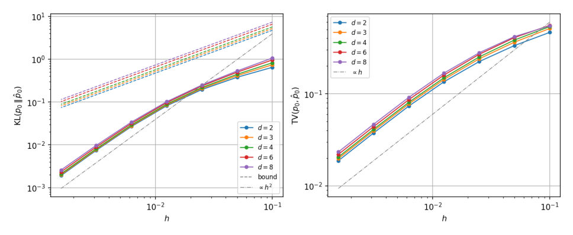
<figcaption class="paper-figure-caption"><b>Fig 3.</b> Figure 3: Time discretization for the smooth ensemble (80): depolarizing channel, γ = 1/4, exact score, started from pT with T = 1, uniform steps h down to δ = 0. Left: relative entropy KL(p0 ∥ˆp0) (dots) and bound (64) with exact coefficients (dashed). Right: total variation distance TV(p0, ˆp0). Dash-dotted: slopes 2 and 1.</figcaption>
</figure>
<figure class="paper-figure-card">
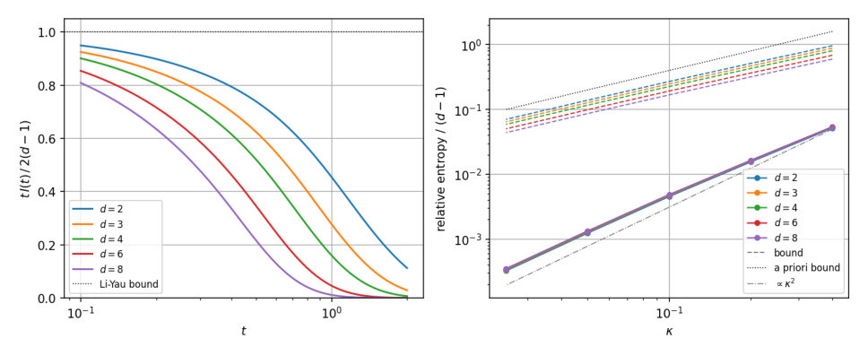
<figcaption class="paper-figure-caption"><b>Fig 4.</b> Figure 4: Time discretization for a pure initial state: depolarizing channel, γ = 1/4, Dirac mass p0, exact score, started from pT with T = 2, δ = 0.1. Left: t I(t) in units of the Li-Yau value 2(d −1). Right: relative entropy KL(pδ ∥ˆpδ) (dots) and bound (64) with exact coefficients (dashed), divided by d −1, for the geometric grids with κ = 0.4, 0.2, 0.1, 0.05, 0.025. Dotted: a priori bound κ(1 + log(T/δ)). Dash-dotted: slope 2.</figcaption>
</figure>
<figure class="paper-figure-card">
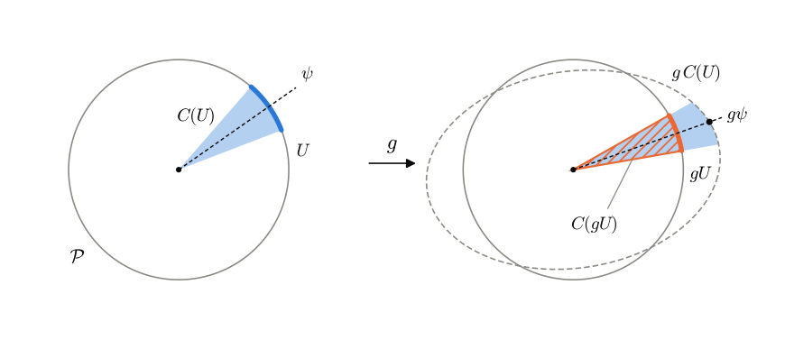
<figcaption class="paper-figure-caption"><b>Fig 5.</b> Figure 5: Illustration of the proof of Lemma 2. Left: a set U of rays around ψ and its cone C(U), whose area defines the measure m(U). Right: the image g C(U) (shaded) and the cone C(gU) (hatched). For a very thin cone, the ratio between the volume of g C(U) and that of C(gU) is roughly the radius ∥g|ψ⟩∥ to the power of dimension, here 2d.</figcaption>
</figure>
</div>

<p><strong>Summary.</strong> This paper develops a method to reverse the stochastic diffusion process that describes open quantum system evolution. By deriving a backward stochastic differential equation on the manifold of pure states, the authors create a generative model for quantum states. This is significant because it allows for the controlled generation of quantum ensembles by reversing the effects of quantum dissipation.</p>
<p><strong>Why it may be interesting.</strong> This work provides a rigorous, geometrically motivated framework for simulating quantum processes in reverse, which is highly relevant for understanding quantum state preparation and noise characterization in open quantum systems.</p>
<details>
<summary>Detailed structure</summary>
<p><strong>Main problem.</strong> The paper derives the time reversal of quantum state diffusion, which is governed by a Lindblad master equation, and utilizes this reversal for generating new quantum state ensembles.</p>
<p><strong>Main result.</strong> A physical, nonlinear backward stochastic differential equation (SDE) is derived that unravels the inverse Lindbladian evolution, allowing for the generation of new quantum states from a prior distribution.</p>
<p><strong>Method.</strong> The authors employ general machinery for stochastic differential equations on Riemannian manifolds, specifically working on the complex projective space of pure states, and comparing discrete-time approximations to the continuous backward SDE.</p>
<p><strong>Model / system.</strong> The system is an open quantum system whose dynamics are described by a Lindblad master equation. The evolution of the pure state vector is modeled by Gisin's quantum state diffusion SDE.</p>
<p><strong>Key observables.</strong> The probability density on the manifold of pure states, the relative entropy (KL divergence) between generated and original distributions, and the expectation value of an operator.</p>
<p><strong>Important parameters / regimes.</strong> The Lindblad operators ($L_k$), the time step ($\delta$), and the structure of the noise fields.</p>
<p><strong>Assumptions / limitations.</strong> The derivation assumes the manifold of pure states is compact and smooth, and the backward SDE is only valid for the specific ensemble from which it was constructed.</p>
<p><strong>Figures summary.</strong> The notes do not provide a summary of figures, but mention numerical tests for invariant ensembles using Jacobi polynomials.</p>
<p><strong>Paper structure.</strong> The paper progresses from establishing the forward diffusion process via the Lindblad equation, to deriving the general formalism for time reversal on a Riemannian manifold, and finally applying this to derive error bounds and compare discrete vs. continuous time results.</p>
</details>
<details>
<summary>Abstract</summary>
<p>Quantum state diffusion unravels a Lindblad master equation into stochastic trajectories of pure states. The ensemble of trajectories is described by a probability density on the manifold of pure states, which contains much more information than the density matrix, its first moment. We derive the time reversal of this diffusion. Writing the reversal of a general diffusion on a manifold in Stratonovich form, and passing through the manifold of pure states, we obtain a backward stochastic differential equation for the state vector, valid for any Hilbert space dimension and any Lindbladian. The backward stochastic equation provides a physical, nonlinear unravelling of the inverse Lindbladian that holds only for the ensemble from which it was constructed. Following score-based generative models, we then use the backward equation to generate a new ensemble close to the original. For the depolarizing channel the unravelling is a Brownian motion on complex projective space, so the uniform distribution of pure states is its stationary law in any dimension. Starting the backward equation from that prior, we bound the error of the resulting distribution compared to the original one in different settings: exact and learned scores, continuous and discrete time.</p>
</details>
<p><sub><a href="#top">↑ back to top</a></sub></p>

<p><a id="paper-2609.39372"></a></p>
<h3 id="efficient-learning-of-fermionic-magic-states-under-free-fermion-evolution"><a href="http://arxiv.org/abs/2609.39372v1">Efficient Learning of Fermionic Magic States under Free-Fermion Evolution</a></h3>
<p><strong>Authors:</strong> Jiwon Heo, Myeongjin Shin, Changhun Oh<br>
<strong>Type:</strong> theory · <strong>Category:</strong> quantum information and computing · <strong>PDF:</strong> <a href="https://arxiv.org/pdf/2609.39372v1">https://arxiv.org/pdf/2609.39372v1</a><br>
<strong>Analysis basis:</strong> full PDF text, analyzed in chunks
<strong>Topic relevance:</strong> <code>analog quantum simulation</code> <strong>3/5</strong> · <code>methods for driven-dissipative</code> <strong>3/5</strong> · <code>quantum measurements</code> <strong>2/5</strong> · <code>Keldysh / 2PI / non-Gaussian methods</code> <strong>1/5</strong></p>
<div class="figure-strip-hint">↔ Scroll figures horizontally</div>
<div class="paper-figures-scroll">
<figure class="paper-figure-card">
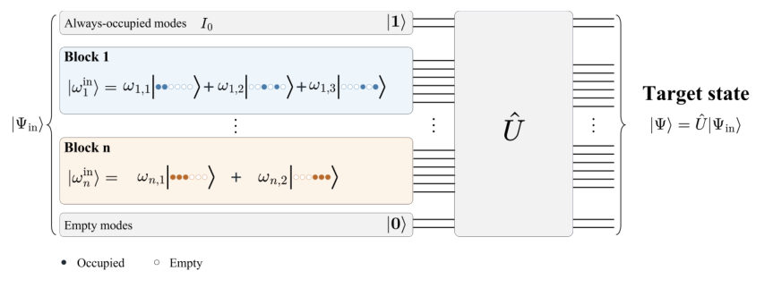
<figcaption class="paper-figure-caption"><b>Fig 1.</b> FIG. 1. Example of the input state family |Ψin⟩and target state |Ψ⟩. Mode numbers within each illustrated block are local to that block; different blocks occupy disjoint sets of physical modes. Block 1 has 𝑠1 = 3 branches and 𝑝1 = 2 particles, with occupied local mode sets {1, 2}, {3, 5}, and {4, 6}. Block 𝑛has 𝑠𝑛= 2 branches and 𝑝𝑛= 3 particles, with occupied local mode sets {1, 2, 3} and {4, 5, 6}. These block states, together with always-occupied modes |1⟩and empty modes |0⟩, form the input state |Ψin⟩in Eq. (3). Applying the unknown passive Gaussian unitary ^𝑈gives the target state |Ψ⟩in Eq. (5).</figcaption>
</figure>
<figure class="paper-figure-card">

<figcaption class="paper-figure-caption"><b>Fig 2.</b> Fig. 1(a) illustrates the target state. For each block 𝑏, define the transformed block state by |𝜔𝑏⟩:= ˆ𝑈|𝜔in 𝑏⟩. Although particle-number conservation ensures that |𝜔𝑏⟩remains a 𝑝𝑏-particle state, its expansion in the output Fock basis is unknown.</figcaption>
</figure>
</div>

<p><strong>Summary.</strong> This paper develops an efficient quantum information protocol to reconstruct a fermionic magic state $|\Psi
angle$ that results from an unknown free-fermion evolution $\hat{U}$ acting on a structured input state $|\Psi_{	ext{in}}
angle$. It achieves this by leveraging the spectral properties of particle reduced density matrices (RDMs) to decompose the state into its constituent blocks. The result demonstrates that the state can be learned with polynomial complexity, providing a powerful tool for characterizing complex quantum many-body states.</p>
<p><strong>Why it may be interesting.</strong> This work provides a rigorous theoretical framework for characterizing and simulating complex quantum states generated by free-fermion dynamics, which is highly relevant for understanding quantum simulation algorithms and resource estimation in quantum information.</p>
<details>
<summary>Detailed structure</summary>
<p><strong>Main problem.</strong> The paper establishes efficient methods to learn a compact description of a fermionic magic state $|\Psi
angle$ that results from applying an unknown free-fermion evolution ($\hat{U}$) to a structured input state $|\Psi_{	ext{in}}
angle$.</p>
<p><strong>Main result.</strong> The authors show that this learning can be achieved using single-copy measurements and polynomial complexity by exploiting the spectral structure of particle reduced density matrices (RDMs).</p>
<p><strong>Method.</strong> The core method involves recursively analyzing and reconstructing the state by utilizing the $k$-RDM ($\Gamma^{(k)}$) to separate contributions from different input blocks, followed by classical post-processing like Gram-splitting.</p>
<p><strong>Model / system.</strong> The system is a fermionic model described by creation and annihilation operators ($\hat{c}^\dagger, \hat{c}$) acting on $m$ modes. The state $|\Psi
angle$ is generated by a passive Gaussian unitary $\hat{U}$ acting on a structured input state $|\Psi_{	ext{in}}
angle$ composed of disjoint fermionic blocks.</p>
<p><strong>Key observables.</strong> Particle reduced density matrices ($\Gamma^{(k)}_\Psi$), fidelity ($\epsilon_{	ext{fid}}$), and the reconstructed state $ ilde{\Psi}$.</p>
<p><strong>Important parameters / regimes.</strong> The required RDM order ($r$) is bounded by the maximum particle number per block; complexity depends polynomially on $m$ and $1/\epsilon_{	ext{fid}}$.</p>
<p><strong>Assumptions / limitations.</strong> The input blocks have a definite, bounded particle number, and the analysis relies on the spectral properties of the RDMs to decompose the state structure.</p>
<p><strong>Figures summary.</strong> Figure 1 illustrates the input state family ($\vert\Psi_{	ext{in}}
angle$) and the target state ($\vert\Psi
angle$), showing how local mode sets define blocks and how the target state is obtained via the unitary $\hat{U}$.</p>
<p><strong>Paper structure.</strong> The paper progresses from defining the problem (learning $\hat{U}|\Psi_{	ext{in}}
angle$) to developing the mathematical tools (exploiting RDM spectral structure), proving the existence of efficient algorithms for both homogeneous and heterogeneous block structures, and finally bounding the preparation error and complexity.</p>
</details>
<details>
<summary>Abstract</summary>
<p>We establish efficient learning for a family of fermionic magic states under unknown number-conserving free-fermion evolution. Each input block has a definite particle number and is a superposition of Fock states, with occupied mode sets disjoint both within and across blocks. The key idea is to exploit the spectral structure of particle reduced density matrices (RDMs) to separate contributions from individual blocks from those involving several blocks, allowing us to reconstruct the hidden block structure. For a fixed upper bound on the particle number per block, our algorithm uses single-copy measurements and polynomial sample and classical computational complexity to recover a compact description of the state with prescribed fidelity and high probability, without prior knowledge of the block decomposition or the evolution. RDMs up to this upper bound suffice for reconstruction. We further show that this RDM order is necessary in general: two orthogonal states in the family can have identical RDMs at every lower order. These results show that an extensive number of non-Gaussian blocks can be compatible with efficient state learning.</p>
</details>
<p><sub><a href="#top">↑ back to top</a></sub></p>

<p><a id="paper-2609.39500"></a></p>
<h3 id="emergent-quantum-geometric-phases-in-holey-graphene"><a href="http://arxiv.org/abs/2609.39500v1">Emergent Quantum Geometric Phases in Holey Graphene</a></h3>
<p><strong>Authors:</strong> Pablo Canteli, Yuriko Baba, Juan Salvador-Sánchez, Jorge Estrada-Álvarez, Ana Pérez-Rodríguez, Carlos Sánchez-Sánchez, Vito Clericò, Takashi Taniguchi, Kenji Watanabe, Francisco Domínguez-Adame, Rafael A Molina, Enrique Diez, Elena Díaz, Mario Amado<br>
<strong>Type:</strong> experiment · <strong>Category:</strong> other · <strong>PDF:</strong> <a href="https://arxiv.org/pdf/2609.39500v1">https://arxiv.org/pdf/2609.39500v1</a><br>
<strong>Analysis basis:</strong> full PDF text, analyzed in chunks
<strong>Topic relevance:</strong> <code>Frenkel-Kontorova</code> <strong>3/5</strong> · <code>analog quantum simulation</code> <strong>3/5</strong> · <code>interference shaping light</code> <strong>2/5</strong> · <code>quantum measurements</code> <strong>1/5</strong></p>
<div class="figure-strip-hint">↔ Scroll figures horizontally</div>
<div class="paper-figures-scroll">
<figure class="paper-figure-card">
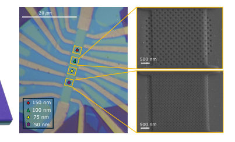
<figcaption class="paper-figure-caption"><b>Fig 1.</b> Fig. 1 Device schematic and optical micrograph for Sample A. a) Schematic illustration of a simplified Hall bar geometry showing the source, drain, and voltage contacts. The antidots form a rotated square lattice, where the colored circles depict classical cyclotron orbits encircling 1, 2, 4, and 9 antidots, representing the primary non-chaotic contributions of Weiss oscillations to the longitudinal resistance. b) Optical micrograph of a 16-terminal Hall bar device. The device features four distinct patterned regions with antidot diameters of Θ = 50, 75, 100, and 150 nm. Two unpatterned, pristine regions at the ends of the Hall bar serve as reference sections to characterize the unperturbed...</figcaption>
</figure>
<figure class="paper-figure-card">
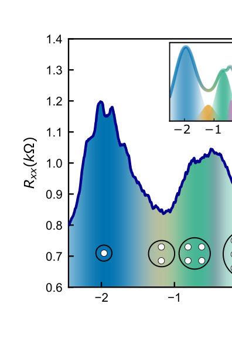
<figcaption class="paper-figure-caption"><b>Fig 2.</b> Fig. 2 Magnetoresistance measurement and commensurability peak identification. Lon- gitudinal magnetoresistance Rxx measured as a function of the normalized magnetic field a/RC (where RC is the cyclotron radius) for the Θ = 75 nm region of Sample A. The data were acquired at T = 1.5 K under a fixed carrier density of nc = 1.81 × 1012 cm−2. Distinct commensurability features are resolved, corresponding to classical cyclotron orbits that encircle 1, 2, 4, and 9 antidots, with their respective radii determined via Eq. (1). We will label these orbits by Hk, being k the number of enclosed antidots, i.e. H1, H2, H4 and H9. The outermost and most prominent commensurability peak H1 emerges at a...</figcaption>
</figure>
<figure class="paper-figure-card">
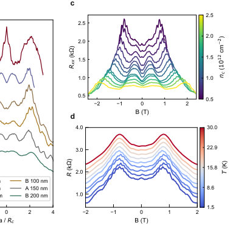
<figcaption class="paper-figure-caption"><b>Fig 3.</b> Fig. 3 Density dependence, scaling behavior, and thermal suppression of commensu- rability features. a) Contour plot of the longitudinal resistance Rxx as a function of external out-of-plane magnetic field B and carrier density nc for the Θ = 75 nm antidot region of Sample A. The gray-shaded area near the Dirac point is omitted to enhance contrast. The dashed line tracks the evolution of the primary commensurability peak, while the linear branches corresponding to stan- dard Shubnikov-de Haas oscillations become notably visible at higher fields. b) Rxx as a function of the normalized magnetic field a/RC for different antidot diameters across regions of both Sample A and Sample B. The...</figcaption>
</figure>
<figure class="paper-figure-card">
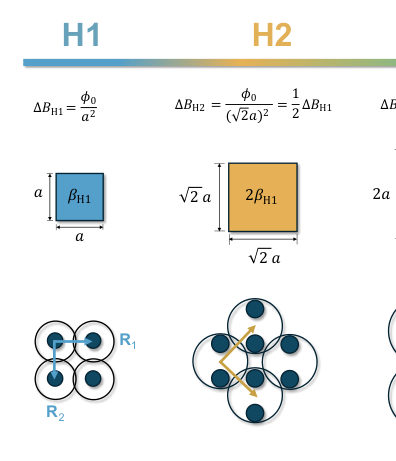
<figcaption class="paper-figure-caption"><b>Fig 4.</b> Fig. 4 Hierarchical self-similarity and flux-quantization rescaling in the square antidot superlattice. Schematic representation of the nested, commensurate sub-lattices (H1, H2, H4, and H9) formed by the collective behavior of carrier trajectories enclosing multiple scatterers. H1 The fundamental square unit cell of side length a defining the baseline field spacing required to insert one extra flux quantum, ∆BH1 = h/(ea2) = ϕ0n1. This establishes the fundamental flux ratio βH1 = ϕ/ϕ0 for the primary unit cell. H2 The first-order expanded sub-lattice, rotated by 45◦with an effective period of √</figcaption>
</figure>
<figure class="paper-figure-card">
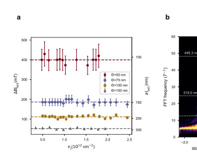
<figcaption class="paper-figure-caption"><b>Fig 5.</b> Fig. 5 Sliding-window Fourier analysis and structural scaling of superlattice oscilla- tions. a) Experimental oscillation spacing ∆B at the H1 peak as a function of carrier density for four different antidot dimensions (Θ = 50, 75, 100, 150 nm from Sample A). The density-independent behavior confirms the structural nature of the oscillations. Horizontal dashed lines indicate the mean spacing ∆BH1 used to extract the effective superlattice parameters a|H1 indicated on the right-hand axis. b) Sliding-window FFT analysis of the longitudinal magnetoresistance for Θ = 75 nm versus the magnetic field window center. The right-hand axis shows extracted real-space periodicities matching a, √</figcaption>
</figure>
</div>

<p><strong>Summary.</strong> This work reports on magnetotransport measurements in graphene patterned with antidot lattices to study quantum geometric phases. The authors demonstrate that these engineered superlattices create moiré-like electronic structures in single-layer graphene. This establishes a clean, scalable platform for realizing and measuring fundamental quantum phenomena in 2D materials.</p>
<p><strong>Why it may be interesting.</strong> The ability to engineer moiré physics in a single layer via lithography, rather than relying on complex stacking or twisting, provides a highly controllable platform for studying geometric phases relevant to topological physics and quantum transport.</p>
<details>
<summary>Detailed structure</summary>
<p><strong>Main problem.</strong> The paper investigates the emergence and direct measurement of intrinsic quantum geometric phases in graphene by engineering periodic potentials.</p>
<p><strong>Main result.</strong> The patterned antidot lattice successfully generates moiré-like electronic spectra in single-layer graphene without requiring twist or multilayer stacking, establishing a tunable platform for exploring moiré physics.</p>
<p><strong>Method.</strong> Magnetotransport measurements ($R_{xx}$ vs. magnetic field) are performed on lithographically patterned graphene samples.</p>
<p><strong>Model / system.</strong> The physical system is encapsulated monolayer graphene patterned with ultra-high-quality periodic antidot lattices. The analysis combines classical commensurability features (Weiss peaks) with quantum interference effects (Brown-Zak oscillations).</p>
<p><strong>Key observables.</strong> Longitudinal magnetoresistance ($R_{xx}$), commensurability peaks ($H_k$), and Brown-Zak oscillations.</p>
<p><strong>Important parameters / regimes.</strong> Antidot diameters ($\Theta$) ranging from 50 nm to 300 nm; carrier mobility ($\mu$) $\sim 10^5 	ext{ cm}^2/	ext{Vs}$.</p>
<p><strong>Assumptions / limitations.</strong> The intrinsic geometric phase is directly measurable and the patterned lattice acts as a clean, tunable superlattice potential.</p>
<p><strong>Figures summary.</strong> Figures show device schematics, optical micrographs of the antidot lattice, and magnetoresistance ($R_{xx}$) measurements resolving distinct commensurability peaks ($H_k$).</p>
<p><strong>Paper structure.</strong> The paper progresses from demonstrating the physical platform (patterned graphene) to measuring classical commensurability features, and finally observing quantum interference effects like Brown-Zak oscillations, confirming the geometric phase measurement.</p>
</details>
<details>
<summary>Abstract</summary>
<p>In graphene and other two-dimensional materials, periodic modulations of the electron density can significantly alter the energy spectrum and transport properties. Here, we report magnetotransport measurements in encapsulated monolayer graphene with ultra-high-quality patterned periodic antidot lattices that preserve the intrinsic electronic properties of the material. This lithographically defined platform enables controlled access to commensurability and superlattice phenomena at length scales otherwise difficult to achieve. By systematically tuning the lattice dimensions, we reveal a hierarchy of classical commensurability features arising from cyclotron orbits with comparable radii that follow multiple classical trajectories, resulting in broadened resistance peaks beyond the conventional single-orbit picture. Superimposed on these features, we observe pronounced Brown-Zak oscillations arising from the quantum commensurability between the magnetic flux quantum and the unit cell of the engineered Bravais lattices. We demonstrate that the intrinsic geometric phase of our system is directly measurable and show a precise matching of the magnetic field periodicity to the lithographic periodic patterning, where moiré-like electronic spectra can be geometrically generated in single-layer graphene without the need for twist, lattice mismatch, or multilayer stacking. Our results establish nanopatterned graphene as a clean, tunable, and scalable platform for realizing and exploring moiré physics through on-demand real-space design</p>
</details>
<p><sub><a href="#top">↑ back to top</a></sub></p>

<p><a id="paper-2609.38318"></a></p>
<h3 id="energy-transmission-across-holographic-conformal-interfaces-in-general-dimensions"><a href="http://arxiv.org/abs/2609.38318v1">Energy Transmission Across Holographic Conformal Interfaces in General Dimensions</a></h3>
<p><strong>Authors:</strong> Igal Arav, Theodore Bertrand, Shira Chapman, Giuseppe Policastro, Sebastian Waeber<br>
<strong>Type:</strong> theory · <strong>Category:</strong> statistical mechanics · <strong>PDF:</strong> <a href="https://arxiv.org/pdf/2609.38318v1">https://arxiv.org/pdf/2609.38318v1</a><br>
<strong>Analysis basis:</strong> full PDF text, analyzed in chunks
<strong>Topic relevance:</strong> <code>Keldysh / 2PI / non-Gaussian methods</code> <strong>3/5</strong> · <code>non-equilibrium universality</code> <strong>3/5</strong> · <code>correlated / nonlocal dissipation</code> <strong>1/5</strong> · <code>driven-dissipative phase transition</code> <strong>1/5</strong> · <code>methods for driven-dissipative</code> <strong>1/5</strong></p>
<div class="figure-strip-hint">↔ Scroll figures horizontally</div>
<div class="paper-figures-scroll">
<figure class="paper-figure-card">
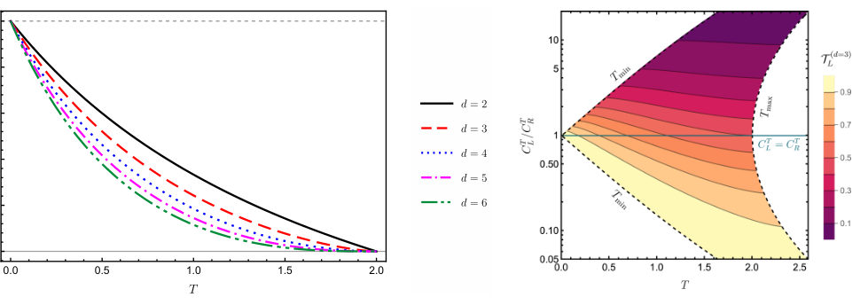
<figcaption class="paper-figure-caption"><b>Fig 1.</b> FIG. 1. The thin-brane transmission coefficient TL as a function of the rescaled tension T, defined in equation (25). Left: the symmetric case, CT L = CT R, for boundary dimensions d = 2, . . . , 6. The upper (lower) transmission bound (23) is indicated by the dashed (solid) horizontal gray line. Right: the asymmetric d = 3 case, shown as a contour plot in the (T, CT L /CT R) plane. The color scale indicates T (d=3) L . The black dashed curves labeled Tmin and Tmax denote the tension bounds (18), while the solid dark teal colored line marks the CT L = CT R slice. The plot illustrates that complete transmission is not allowed when CT R &lt; CT L , in agreement with the transmission bounds in...</figcaption>
</figure>
<figure class="paper-figure-card">
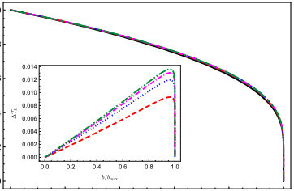
<figcaption class="paper-figure-caption"><b>Fig 2.</b> FIG. 2. The transmission coefficient TL for Janus geometries with flat potential as a function of b/bmax for d = 2, . . . , 6. The inset resolves the weak dimensional dependence by show- ing ∆TL ≡TL −T (d=2) L , the difference relative to the d = 2 result.</figcaption>
</figure>
<figure class="paper-figure-card">
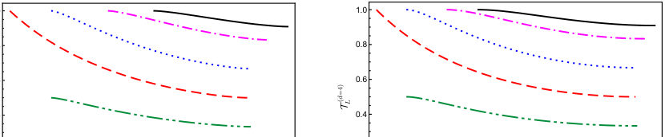
<figcaption class="paper-figure-caption"><b>Fig 3.</b> FIG. 3. The thin-brane transmission coefficient TL as a function of the dimensionless tension parameter T, defined in Eq. (F6), for several values of CT L /CT R. Left: d = 3. Right: d = 4. Each curve is shown over the admissible tension interval (F12). The different curves correspond to different values of the ratio CT L /CT R as specified in the legend.</figcaption>
</figure>
</div>

<p><strong>Summary.</strong> This theoretical paper uses AdS/CFT holography to calculate how energy is transmitted across interfaces separating different quantum field theories in dimensions higher than two. It derives a general formula for the transmission coefficient, establishing a new result for higher-dimensional systems and demonstrating surprising universality in the result.</p>
<p><strong>Why it may be interesting.</strong> While highly technical, the concept of energy transport across boundaries is fundamental to non-equilibrium statistical mechanics and open quantum systems, providing a holographic tool to calculate transport coefficients.</p>
<details>
<summary>Detailed structure</summary>
<p><strong>Main problem.</strong> The paper investigates the universal behavior of energy transmission across holographic conformal interfaces in general spacetime dimensions ($d>2$). It seeks to extend known 2D results to higher dimensions where scattering is more complex.</p>
<p><strong>Main result.</strong> The authors derive a closed-form expression for the energy transmission coefficient, showing it is independent of the incidence angle and the profile of the incident perturbation within the studied class of geometries.</p>
<p><strong>Method.</strong> The calculation employs gravitational holography, perturbing the metric and matter fields around a domain-wall geometry dual to an Interacting Conformal Field Theory (ICFT). The transmission coefficient is derived by analyzing the energy flux observable.</p>
<p><strong>Model / system.</strong> The model involves a codimension-one defect separating two CFTs, dual to an AdS$_d$-sliced domain-wall geometry. Specific examples include the thin-brane model and Janus geometries.</p>
<p><strong>Key observables.</strong> Energy transmission coefficient ($T_{L,R}$), stress-tensor two-point function coefficients ($C_{T,L,R}$), and the energy flux observable $E$.</p>
<p><strong>Important parameters / regimes.</strong> The dimensionality $d$, the warp factor $a(y)$, and the tension parameters ($\Sigma$) characterizing the interface.</p>
<p><strong>Assumptions / limitations.</strong> The analysis is restricted to a broad class of AdS$_d$-sliced domain-wall geometries, and the calculation relies on treating sources as small perturbations ($\mathcal{O}(\epsilon)$).</p>
<p><strong>Figures summary.</strong> The notes mention figures illustrating the thin-brane transmission coefficient versus tension, showing both symmetric and asymmetric cases.</p>
<p><strong>Paper structure.</strong> The paper develops the calculation by first establishing the general metric and stress tensor VEVs using Fefferman-Graham expansions, then applying matching and scattering conditions at the interface to derive the final ratio for the transmission coefficient.</p>
</details>
<details>
<summary>Abstract</summary>
<p>Energy transport across conformal interfaces is universal in two spacetime dimensions, but its higher-dimensional counterpart has remained largely unexplored. In higher dimensions, scattering can depend on additional kinematic data, such as the angle of incidence, and conformal symmetry is far less restrictive. We use gravitational holography to study this problem. For a broad class of AdS$_d$-sliced domain-wall geometries, we derive a closed-form expression for the energy transmission coefficient in terms of the bulk warp factor. Our formula reproduces known two-dimensional holographic results and extends them to arbitrary dimension. Within this class, we establish different aspects of higher-dimensional universality. In particular, we show that the transmission is independent of the incidence angle and of the profile of the incident perturbation. We also derive bounds on transmission controlled by central-charge-like quantities characterizing the number of degrees of freedom of the theories on the two sides of the interface. This provides the first explicit result for reflection and transmission across conformal interfaces in higher dimensions, where no CFT-based results are currently available.</p>
</details>
<p><sub><a href="#top">↑ back to top</a></sub></p>

<p><a id="paper-2609.38569"></a></p>
<h3 id="more-thermal-gauge-theories-at-finite-math415math-and-math416math-from-real-time-quantum-simulation"><a href="http://arxiv.org/abs/2609.38569v1">MORE Thermal Gauge Theories at Finite $θ$ and $μ$ from Real-Time Quantum Simulation</a></h3>
<p><strong>Authors:</strong> Henry Lamm<br>
<strong>Type:</strong> theory · <strong>Category:</strong> statistical mechanics · <strong>PDF:</strong> <a href="https://arxiv.org/pdf/2609.38569v1">https://arxiv.org/pdf/2609.38569v1</a><br>
<strong>Analysis basis:</strong> full PDF text, analyzed in chunks
<strong>Topic relevance:</strong> <code>Keldysh / 2PI / non-Gaussian methods</code> <strong>3/5</strong> · <code>methods for driven-dissipative</code> <strong>3/5</strong> · <code>analog quantum simulation</code> <strong>2/5</strong> · <code>quantum measurements</code> <strong>1/5</strong></p>
<div class="figure-strip-hint">↔ Scroll figures horizontally</div>
<div class="paper-figures-scroll">
<figure class="paper-figure-card">
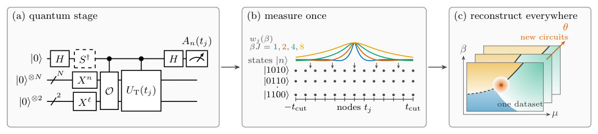
<figcaption class="paper-figure-caption"><b>Fig 1.</b> FIG. 1. The More pipeline. (a) Quantum stage: the Hadamard test for one basis state |n⟩and one node tj, returning An(tj) = ⟨n|e−iHtjO|n⟩, the diagonal case of the measured primitive of Eq. (10), from M shots (non-unitary O is expanded in Pauli strings); off-diagonal elements use the same circuit on superposition states [16, 17]. The optional S† selects the imaginary part. (b) Measure once: the dataset is the table An(tj), one row per computational-basis trace state and one column per node of the real-time grid; the weights wj(β) of Eq. (5) are drawn for βJ = 1, 2, 4, 8 (J = g2a/2), so changing β changes only the weights. (c) Reconstruct everywhere: β, τ and µ are reached by classical...</figcaption>
</figure>
<figure class="paper-figure-card">
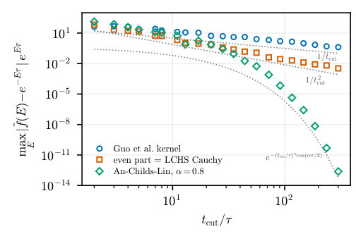
<figcaption class="paper-figure-caption"><b>Fig 2.</b> FIG. 2. Worst-case relative error of the reconstructed fil- ter e−Eτ over the spectrum versus tcut/τ, for the kernels of Eq. (1) [18], Eq. (4), and Eq. (5) [20]. Dotted lines and their adjacent labels show the predicted convergence laws.</figcaption>
</figure>
<figure class="paper-figure-card">
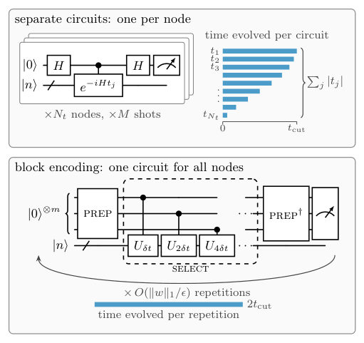
<figcaption class="paper-figure-caption"><b>Fig 3.</b> FIG. 3. Two implementations of P</figcaption>
</figure>
<figure class="paper-figure-card">
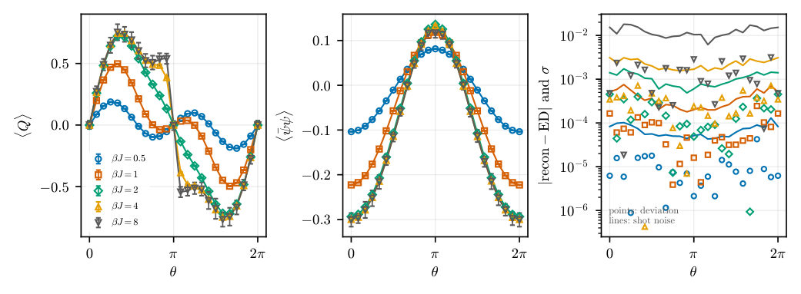
<figcaption class="paper-figure-caption"><b>Fig 4.</b> FIG. 4. One-flavor Schwinger model with periodic boundaries, N = 10, holonomy truncation ℓmax = 1, at five temperatures: topological charge ⟨Q⟩(left) and chiral condensate ⟨¯ψψ⟩(center), reconstructed from real-time data (open markers, one shape per temperature; means over 30 resamplings, bars the spread of one) against ED (lines). The right panel shows, for ⟨¯ψψ⟩, |recon −ED| as points and the shot-noise spread σ as lines.</figcaption>
</figure>
<figure class="paper-figure-card">
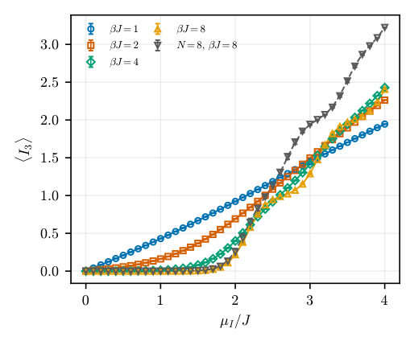
<figcaption class="paper-figure-caption"><b>Fig 5.</b> FIG. 5. Two-flavor Schwinger model, N = 6 with holonomy truncation ℓmax = 3. Points are from More, reconstructed from a single µ = 0 dataset; lines are ED.</figcaption>
</figure>
</div>

<p><strong>Summary.</strong> This paper introduces a novel methodology to calculate thermal properties of quantum field theories, such as those found in lattice gauge theories, using only real-time quantum simulation data. By employing exact integral transforms and optimizing the reconstruction kernel, the authors enable the extraction of finite-temperature, finite-$   heta$, and finite-$\mu$ physics from a single set of measurements. This significantly advances the feasibility of simulating complex thermal states on quantum hardware.</p>
<p><strong>Why it may be interesting.</strong> The technique provides a powerful, resource-efficient bridge between real-time quantum simulation (a major focus in quantum computing) and equilibrium statistical mechanics calculations, which is highly relevant for studying thermalization and phase transitions in quantum systems.</p>
<details>
<summary>Detailed structure</summary>
<p><strong>Main problem.</strong> The core problem is reconstructing imaginary-time evolution (needed for thermal factors and Euclidean correlators) from real-time quantum simulations, especially for finite temperature, topological angle, and chemical potential.</p>
<p><strong>Main result.</strong> The authors developed a method that allows a single real-time dataset to reconstruct targeted thermal physics parameters ($eta, 	au, \mu$) through classical post-processing, circumventing the need for explicit thermal state preparation.</p>
<p><strong>Method.</strong> The technique uses exact integral transforms to map real-time quantum measurements onto imaginary-time evolution operators, optimizing the reconstruction kernel for faster convergence.</p>
<p><strong>Model / system.</strong> The method is benchmarked on lattice Schwinger models (one- and two-flavor) within the context of lattice field theory, allowing the study of thermal properties in gauge theories.</p>
<p><strong>Key observables.</strong> Partition functions, thermal traces, Euclidean correlators, topological charge ($\langle Q 
angle$), and chiral condensate ($\langle ar{\psi}\psi 
angle$).</p>
<p><strong>Important parameters / regimes.</strong> Inverse temperature ($eta$), imaginary-time interval ($   au$), chemical potential ($\mu$), and topological angle ($ heta$).</p>
<p><strong>Assumptions / limitations.</strong> The method relies on the existence of an exact integral transform relating real-time and imaginary-time evolution, and it requires classical post-processing to extract the final physical quantities.</p>
<p><strong>Figures summary.</strong> Figure 1 illustrates the three-step pipeline: quantum measurement, single data acquisition, and classical reconstruction. Figure 2 compares the convergence rates of different reconstruction kernels, showing superior performance for the near-optimal kernel. Figure 3 compares two circuit implementations for the required measurements.</p>
<p><strong>Paper structure.</strong> The paper first establishes the mathematical identity for reconstruction, then extends this from pure states to thermal traces and correlators. It details the optimization of the reconstruction kernel, presents the full pipeline using the Schwinger model, and finally discusses error budgeting and observable extraction.</p>
</details>
<details>
<summary>Abstract</summary>
<p>Imaginary-time evolution can be reconstructed from real-time quantum simulations using exact integral transforms. We identify the construction of Guo, Shibu, Lin, and Zhao as a continuous linear combination of Hamiltonian simulations and show that its slow $1/t_{\rm cut}$ convergence arises from a redundant kernel component. We extend the construction from pure-state matrix elements to thermal traces and correlators. One real-time dataset then reconstructs targeted inverse temperatures, Euclidean separations, and chemical potentials through classical post-processing, bringing finite-$(T,θ,μ)$ physics within reach of real-time quantum simulation without thermal-state preparation. We benchmark the method on one- and two-flavor lattice Schwinger models, including circuit-level simulations with depolarizing noise.</p>
</details>
<p><sub><a href="#top">↑ back to top</a></sub></p>

<p><a id="paper-2609.39597"></a></p>
<h3 id="thermodynamics-of-ahn-doherty-landahl-continuous-quantum-error-correction"><a href="http://arxiv.org/abs/2609.39597v1">Thermodynamics of Ahn--Doherty--Landahl Continuous Quantum Error Correction</a></h3>
<p><strong>Authors:</strong> Juan Garcia-Nila, Pedro B. Melo, Lucas Johns<br>
<strong>Type:</strong> theory · <strong>Category:</strong> quantum information and computing · <strong>PDF:</strong> <a href="https://arxiv.org/pdf/2609.39597v1">https://arxiv.org/pdf/2609.39597v1</a><br>
<strong>Analysis basis:</strong> full PDF text, analyzed in chunks
<strong>Topic relevance:</strong> <code>quantum measurements</code> <strong>3/5</strong> · <code>methods for driven-dissipative</code> <strong>2/5</strong> · <code>Keldysh / 2PI / non-Gaussian methods</code> <strong>1/5</strong> · <code>correlated / nonlocal dissipation</code> <strong>1/5</strong> · <code>driven-dissipative phase transition</code> <strong>1/5</strong> · <code>non-equilibrium universality</code> <strong>1/5</strong></p>
<div class="figure-strip-hint">↔ Scroll figures horizontally</div>
<div class="paper-figures-scroll">
<figure class="paper-figure-card">
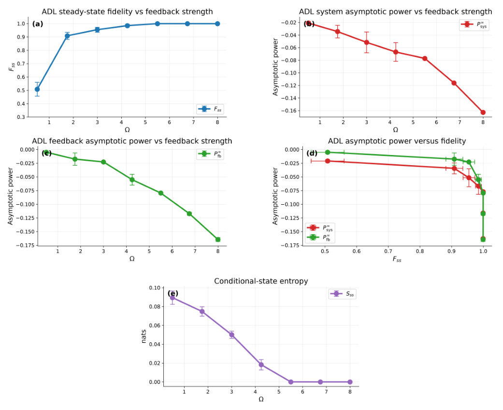
<figcaption class="paper-figure-caption"><b>Fig 1.</b> FIG. 1. Thermodynamic properties of the one-qubit ADL continuous feedback protocol as a function of the feedback strength. (a) Steady-state logical fidelity, (b) asymptotic system power P ∞ sys(T), (c) feedback work P ∞ fb (T), (d) asymptotic average power versus logical fidelity and (e) von Neumann conditional-state entropy.</figcaption>
</figure>
<figure class="paper-figure-card">
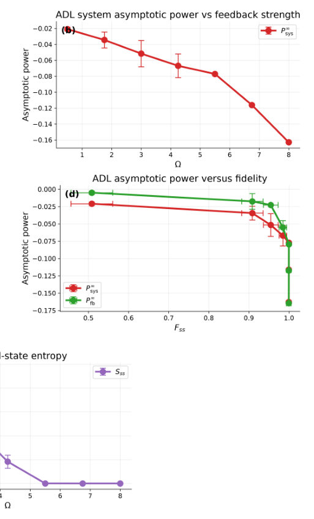
<figcaption class="paper-figure-caption"><b>Fig 2.</b> Figure 1 summarizes the energetic behavior of the ADL feedback protocol. Figure 1(a) shows that the steady-</figcaption>
</figure>
<figure class="paper-figure-card">
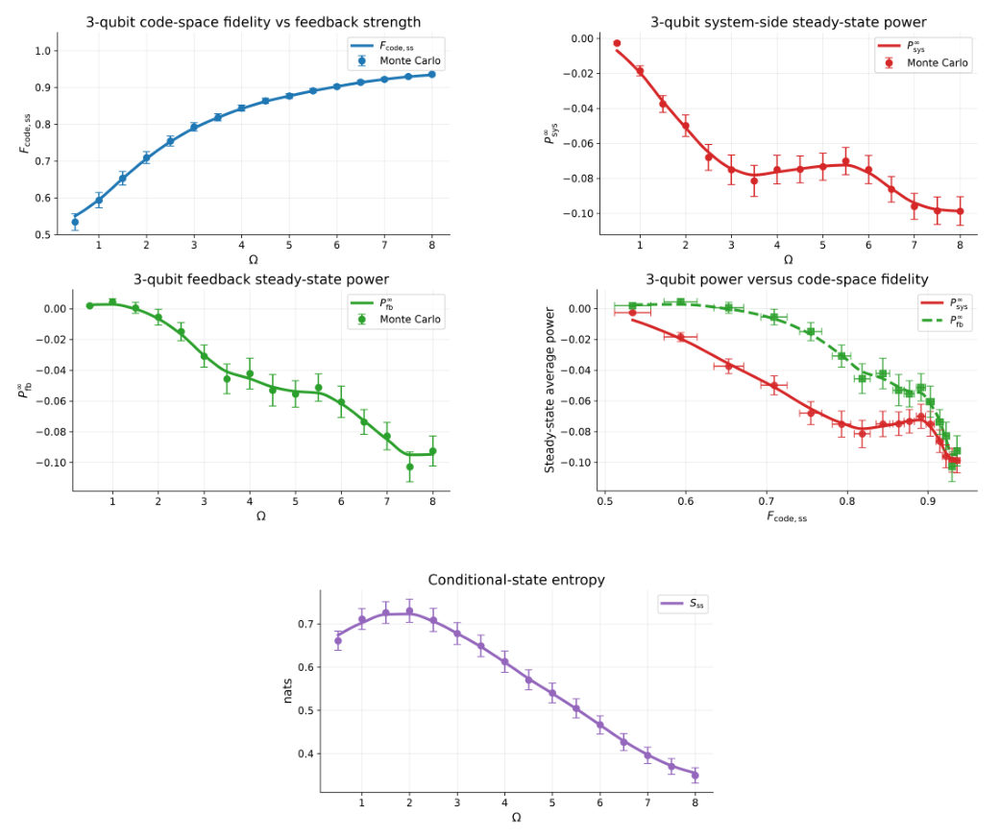
<figcaption class="paper-figure-caption"><b>Fig 3.</b> FIG. 2. Thermodynamic properties of the three-qubit repetition code with ADL continuous feedback protocol, as a function of the feedback strength. (a) Logical codespace fidelity, (b) asymptotic average system power P ∞ sys(T), (c) feedback power P ∞ fb (T), (d) power cost versus logical fidelity and (e) von Neumann entropy.</figcaption>
</figure>
</div>

<p><strong>Summary.</strong> This work develops a thermodynamic framework to quantify the energy costs associated with Continuous Quantum Error Correction (CQEC). By treating the process as an information engine, the authors show that achieving higher logical fidelity necessitates an ever-increasing expenditure of energy from the feedback mechanism. This establishes a fundamental energy-precision trade-off for quantum computation.</p>
<p><strong>Why it may be interesting.</strong> It provides a rigorous thermodynamic cost accounting for quantum control, linking fundamental concepts like energy dissipation and information processing limits to practical quantum error correction schemes.</p>
<details>
<summary>Detailed structure</summary>
<p><strong>Main problem.</strong> The paper investigates the thermodynamic resources (energy, work, entropy) required by Continuous Quantum Error Correction (CQEC) protocols.</p>
<p><strong>Main result.</strong> It establishes a direct, quantifiable trade-off: improving logical fidelity requires a continuously increasing energetic investment from the feedback controller, even after fidelity saturates.</p>
<p><strong>Method.</strong> The analysis formulates CQEC as a non-equilibrium information engine, applying the first law of thermodynamics to the system's evolution governed by a stochastic master equation.</p>
<p><strong>Model / system.</strong> The study models CQEC using the one-qubit Ahn-Doherty-Landahl (ADL) protocol and extends it to the three-qubit repetition code. The dynamics are described by a stochastic master equation incorporating system Hamiltonian evolution, noise, and continuous feedback.</p>
<p><strong>Key observables.</strong> Logical Fidelity ($F$), Internal Energy ($U$), System-side Power ($P_{sys}$), Feedback Power ($P_{fb}$), and Conditional-State Entropy ($S(
ho_c)$).</p>
<p><strong>Important parameters / regimes.</strong> Feedback strength ($\Omega$), Noise rate ($\gamma$), Monitoring strength ($\kappa$), and system Hamiltonian parameters ($\Delta$).</p>
<p><strong>Assumptions / limitations.</strong> The analysis distinguishes between system-side energy transfer and controller-side work, treating the process as a genuine non-equilibrium thermodynamic process.</p>
<p><strong>Figures summary.</strong> Figures summarize the evolution of logical codespace fidelity, asymptotic average system and feedback power costs, and the relationship between power cost and logical fidelity.</p>
<p><strong>Paper structure.</strong> The paper develops the thermodynamic framework for CQEC, first on a minimal one-qubit system, deriving the first law decomposition. It then extends this analysis to the three-qubit repetition code, demonstrating the energetic cost scaling with increasing feedback strength.</p>
</details>
<details>
<summary>Abstract</summary>
<p>Continuous quantum error correction (CQEC) replaces discrete syndrome measurements and recovery operations with continuous syndrome extraction and real-time Hamiltonian feedback. Here we investigate the thermodynamic resources required by this process by formulating measurement-based continuous quantum error correction as an information engine. We distinguish the system-side power associated with energy transfer between the feedback field and the protected system from the controller-side power associated with the feedback Hamiltonian. The framework is first developed for the one-qubit Ahn-Doherty-Landahl (ADL) protocol and subsequently extended to the three-qubit repetition code under continuous stabilizer monitoring. Numerical simulations show that increasing the feedback strength improves the steady-state fidelity and reduces the conditional-state entropy, while both energetic contributions continue to increase in magnitude after the fidelity begins to saturate. These results expose a direct tradeoff between logical stabilization and the energetic resources required for continuous feedback, closely related to previously established energy--precision tradeoffs in quantum measurement and quantum-Zeno stabilization.</p>
</details>
<p><sub><a href="#top">↑ back to top</a></sub></p>

<p><a id="paper-2609.40283"></a></p>
<h3 id="distinguishing-coherent-crosstalk-from-calibration-drift-via-pauli-transfer-signatures-and-quantum-edge-detection"><a href="http://arxiv.org/abs/2609.40283v1">Distinguishing Coherent Crosstalk from Calibration Drift via Pauli-Transfer Signatures and Quantum Edge Detection</a></h3>
<p><strong>Authors:</strong> Syed Emad Uddin Shubha, Tasnuva Farheen<br>
<strong>Type:</strong> both · <strong>Category:</strong> quantum information and computing · <strong>PDF:</strong> <a href="https://arxiv.org/pdf/2609.40283v1">https://arxiv.org/pdf/2609.40283v1</a><br>
<strong>Analysis basis:</strong> full PDF text, analyzed in chunks
<strong>Topic relevance:</strong> <code>QC/QI experiment</code> <strong>3/5</strong> · <code>correlated / nonlocal dissipation</code> <strong>2/5</strong> · <code>quantum measurements</code> <strong>2/5</strong> · <code>methods for driven-dissipative</code> <strong>1/5</strong></p>
<div class="figure-strip-hint">↔ Scroll figures horizontally</div>
<div class="paper-figures-scroll">
<figure class="paper-figure-card">
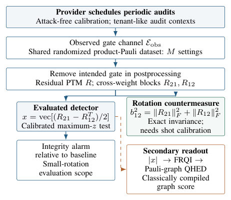
<figcaption class="paper-figure-caption"><b>Fig 1.</b> Fig. 1. Overview of the framework. One shared randomized-Pauli dataset yields the residual PTM and the signed cross-weight vector x, which is exactly zero for product local unital errors (Proposition 1) and first order in any two-qubit Pauli generator (Proposition 2). The calibrated direction-resolved test on x carries the security decision within the small-rotation scope; the full-block norm b12 is invariant under local rotations (Proposition 3), and the FRQI and Pauli-graph QHED branch is a quantum-native readout of the feature’s structural pattern.</figcaption>
</figure>
<figure class="paper-figure-card">

<figcaption class="paper-figure-caption"><b>Fig 2.</b> Fig. 2. Feature norms for four channel families at matched average gate infidelity 0.02. The antisymmetric-traceless feature separates coherent rotation from the tested incoherent channels, while the nonunital feature identifies amplitude damping.</figcaption>
</figure>
<figure class="paper-figure-card">

<figcaption class="paper-figure-caption"><b>Fig 3.</b> Fig. 4. Temporal differential over a 12-frame timeline with attack insertion at frame 8. Drift frames stay below 0.30; the first attack frame scores 0.91.</figcaption>
</figure>
<figure class="paper-figure-card">

<figcaption class="paper-figure-caption"><b>Fig 4.</b> Fig. 3. Left: the weight-sector ratio rw fails; local drift exceeds all attacks at matched infidelity because product drift creates weight-2 copies. Right: the corrected discriminator rcross,anti separates exactly; drift is identically zero (Proposition 1) while all three attack families follow rpure cross,anti = √</figcaption>
</figure>
<figure class="paper-figure-card">

<figcaption class="paper-figure-caption"><b>Fig 5.</b> Fig. 5. Context contrast between driven and idle spectator conditions across matched infidelities. Victim-local drift cancels exactly; all three crosstalk families produce nonzero contrast at every tested infidelity.</figcaption>
</figure>
</div>

<p><strong>Summary.</strong> This paper introduces a novel, structural diagnostic tool to detect coherent crosstalk in quantum processors by analyzing the residual Pauli Transfer Matrix (PTM). It proves that only genuine two-qubit interactions generate a unique, measurable signature in the PTM's cross-weight structure. This signature is then read out using a quantum-native Pauli-graph measurement, providing a robust method to distinguish hardware crosstalk from simple calibration drift.</p>
<p><strong>Why it may be interesting.</strong> This work provides a rigorous, structural diagnostic tool for quantum hardware characterization that moves beyond simple scalar fidelity metrics, which is crucial for scaling quantum computation.</p>
<details>
<summary>Detailed structure</summary>
<p><strong>Main problem.</strong> The paper addresses the critical challenge of distinguishing between malicious coherent crosstalk (nonlocal interactions) and benign calibration drift (local noise) in multi-tenant quantum processors, especially when both result in the same average gate infidelity.</p>
<p><strong>Main result.</strong> A structural verification framework based on the residual Pauli Transfer Matrix (PTM) and Pauli-graph Quantum Hadamard Edge Detection (QHED) was developed, proving that only true two-qubit interactions generate a detectable, non-zero cross-weight signature.</p>
<p><strong>Method.</strong> The authors use a structural diagnostic based on the signed antisymmetric coupling within the PTM, which is shown to be an isometry for two-qubit interactions. This signature is then read out quantum-natively using an FRQI encoding and Pauli-graph QHED.</p>
<p><strong>Model / system.</strong> The work applies to multi-tenant quantum processors, modeled using Pauli operators and characterized by the Pauli Transfer Matrix (PTM). The analysis focuses on distinguishing local, unital noise channels from coherent, non-local two-qubit interaction channels.</p>
<p><strong>Key observables.</strong> The primary observable is the signed cross-weight vector $\mathbf{x}$ derived from the residual PTM, and the secondary, quantum-native readout is the Pauli-graph Edge Score $  ext{edge}(S)$.</p>
<p><strong>Important parameters / regimes.</strong> Detection threshold $\lambda_{\min} \approx 0.13$ (for 16,384 settings), scaling $\propto M^{-1/2}$, and the first-order dependence on interaction strength $\lambda$.</p>
<p><strong>Assumptions / limitations.</strong> The method assumes the ability to perform randomized-Pauli measurements and relies on the structural property that local errors yield zero cross-weight mass, while two-qubit interactions do not.</p>
<p><strong>Figures summary.</strong> Figures illustrate the detection pipeline from shared datasets to the residual PTM, the use of the cross-weight signature, and the final quantum-native readout via Pauli-graph QHED, confirming the detection limit scaling.</p>
<p><strong>Paper structure.</strong> The paper establishes the ambiguity between crosstalk and drift using average fidelity, introduces the PTM framework to define a structural signature ($\mathbf{x}$), proves mathematically that this signature separates local from nonlocal errors, and finally implements a quantum-native readout using FRQI and QHED.</p>
</details>
<details>
<summary>Abstract</summary>
<p>Multi-tenant quantum processors expose a pulse-level attack surface in which coherent crosstalk can mimic benign calibration drift at matched average gate infidelity. We present a structural verification and detection framework based on the residual Pauli transfer matrix (PTM). We prove that products of local unital, trace-preserving channels cannot mix weight-1 and weight-2 Pauli operators, even under coherent drift of arbitrary strength or axis. Building on established PTM-to-Hamiltonian relations, we prove that, for any specified qubit pair in an arbitrarily large system, the first-order map from its nine interaction coefficients to the antisymmetric cross-weight feature is an isometry up to scale. Thus, every interaction direction is locally observable near the identity. We also exhibit cancellation of this feature under large local rotations and prove that the full cross-weight norm is invariant under local unitary composition, providing a structural countermeasure. For calibrated small local rotations, shared randomized-Pauli measurements support periodic verification using the evaluated antisymmetric detector. In simulation, $16{,}384$ randomized settings yield a detection threshold of $λ_{\min}\approx0.13$ at a $5\%$ calibrated false-positive target, with approximately $M^{-1/2}$ scaling in the number of settings $M$. Further experiments characterize detection under relaxation, depolarization, native ZZ fluctuations, and time-dependent pulse dynamics. Finally, an FRQI encoding with Pauli-graph quantum Hadamard edge detection reproduces the classical structural edge score to numerical precision.</p>
</details>
<p><sub><a href="#top">↑ back to top</a></sub></p>

<p><a id="paper-2609.39802"></a></p>
<h3 id="double-localization-for-quantum-gibbs-sampler-gaps-from-an-abstract-framework-to-finite-group-models"><a href="http://arxiv.org/abs/2609.39802v1">Double Localization for Quantum Gibbs Sampler Gaps: From an Abstract Framework to Finite-Group Models</a></h3>
<p><strong>Authors:</strong> Ryu Hayakawa, Angus Southwell, Caesnan M. G. Leditto, Kuo-Chin Chen, Min-Hsiu Hsieh<br>
<strong>Type:</strong> theory · <strong>Category:</strong> statistical mechanics · <strong>PDF:</strong> <a href="https://arxiv.org/pdf/2609.39802v1">https://arxiv.org/pdf/2609.39802v1</a><br>
<strong>Analysis basis:</strong> full PDF text, analyzed in chunks
<strong>Topic relevance:</strong> <code>analog quantum simulation</code> <strong>3/5</strong> · <code>correlated / nonlocal dissipation</code> <strong>1/5</strong> · <code>driven-dissipative phase transition</code> <strong>1/5</strong> · <code>methods for driven-dissipative</code> <strong>1/5</strong> · <code>non-equilibrium universality</code> <strong>1/5</strong> · <code>scars &amp; prethermalization</code> <strong>1/5</strong></p>
<div class="figure-strip-hint">↔ Scroll figures horizontally</div>
<div class="paper-figures-scroll">
<figure class="paper-figure-card">

<figcaption class="paper-figure-caption"><b>Fig 1.</b> Figure 1: Two perspectives motivating our approach. Left: clustering controls quantum de- pendence between regions [KB16, BCR22]. Right: reductions connect Gibbs preparation to classical sampling [HJ24, PVSS+25], whereas dynamical comparison lifts a sector gap under spectral hypotheses [BGS+25].</figcaption>
</figure>
<figure class="paper-figure-card">

<figcaption class="paper-figure-caption"><b>Fig 2.</b> Figure 2: Double localization. Geometric localization selects local updates, while interface localization focuses on a chosen subspace of observables. For each fixed p, the two operations commute. Here A and Ap denote the interface restrictions of K and Kp, respectively, using the same projection onto M. The lattice is schematic, not the graph of the finite-group application.</figcaption>
</figure>
<figure class="paper-figure-card">

<figcaption class="paper-figure-caption"><b>Fig 3.</b> Figure 3: Assembling the two estimates. The block A = ΠKΠ is the global interface problem, estimated here by classical comparison. The remaining quantum directions and their coupling are controlled on bounded collections of updates. Fixed-space coverage and quantitative overlap and assembly bounds join these estimates to give a gap on the full mean-zero observable space. The resulting bound is volume-uniform when the required estimates are uniform.</figcaption>
</figure>
<figure class="paper-figure-card">

<figcaption class="paper-figure-caption"><b>Fig 4.</b> Figure 4: Stronger classical estimates, a wider quantum gap guarantee. Here t = eβJ −1. The same framework turns a one-site estimate into a full quantum gap for t &lt; 2/3, and an exact S3 star certificate into a guarantee through t = 2. The marked ranges describe what the proofs certify, not where the gap disappears.</figcaption>
</figure>
<figure class="paper-figure-card">

<figcaption class="paper-figure-caption"><b>Fig 5.</b> Figure 6: Conditions of the abstract gap theorem under double localization: spectral and Schur bounds (i)–(iii), and geometric assembly conditions (G1)–(G3). The same interface projection Π is used throughout.</figcaption>
</figure>
</div>

<p><strong>Summary.</strong> This paper introduces 'Double Localization,' a novel mathematical framework to prove spectral gaps in quantum many-body systems. By combining global control over a defined 'interface' subspace with local gap estimates, the authors establish rigorous, size-independent lower bounds on the thermalization rate for specific Hamiltonians on structured graphs. This provides a significant theoretical advance for analyzing quantum thermalization dynamics.</p>
<p><strong>Why it may be interesting.</strong> This work provides a powerful, generalizable mathematical tool (Double Localization) to prove spectral gaps in complex quantum systems, which is crucial for understanding thermalization rates in quantum simulation and quantum information processing.</p>
<details>
<summary>Detailed structure</summary>
<p><strong>Main problem.</strong> The core problem is quantifying the rate at which a quantum many-body system approaches thermal equilibrium, which is diagnosed by proving a positive spectral gap for the quantum dynamics.</p>
<p><strong>Main result.</strong> The authors prove an unconditional spectral-gap lower bound for the full dynamics, independent of graph size, for specific Hamiltonians derived from Kitaev's construction on finite graphs.</p>
<p><strong>Method.</strong> They introduce and utilize a novel 'Double Localization' framework that combines a global bound on a defined 'interface' subspace with local quantum gap estimates under specific coupling and assembly conditions.</p>
<p><strong>Model / system.</strong> The study applies to quantum many-body systems defined on finite, simple, three-regular graphs. The Hamiltonian is built from vertex terms of Kitaev’s finite-group quantum double construction, and the dynamics are governed by a local Davies process.</p>
<p><strong>Key observables.</strong> Spectral Gap, Interface Subspace ($M$), Local Quantum Gap Estimates ($K_p$), and the Generator of the evolution.</p>
<p><strong>Important parameters / regimes.</strong> Coupling Strength ($J$), Inverse Temperature ($eta$), and the structure of the finite group ($\Gamma$, e.g., $S_3$).</p>
<p><strong>Assumptions / limitations.</strong> The abstract theorem requires quantitative coupling and geometric assembly conditions, and the final results rely on specific bounds derived for the interface and local updates.</p>
<p><strong>Figures summary.</strong> Figures illustrate the conceptual framework: Figure 1 shows two perspectives (clustering/reduction), Figure 2 schematically details Double Localization (geometric vs. interface), and Figure 3 shows the assembly process combining global and local estimates to yield the full gap.</p>
<p><strong>Paper structure.</strong> The paper develops the abstract Double Localization gap theorem, applies it to the specific Hamiltonian model on finite graphs, and then provides detailed, rigorous calculations (including combinatorial counting and polynomial analysis) to establish the required positive bounds for the interface and local components.</p>
</details>
<details>
<summary>Abstract</summary>
<p>We introduce double localization, a framework for proving spectral gaps of quantum Gibbs samplers through two complementary operations: geometric localization, which selects updates supported in small spatial regions, and interface localization, which focuses on a model-defined subspace of observables while remaining geometrically global. Our abstract gap theorem combines a global bound on this subspace, called the interface, with local quantum gap estimates under quantitative coupling and geometric assembly conditions. The resulting explicit lower bound controls the gap of the full dynamics without requiring the interface to be invariant under the generator. This separation allows global estimates, including classical comparison, to be combined with local control of the remaining quantum directions.   We apply the framework to Hamiltonians built from the vertex terms of Kitaev's finite-group quantum double construction, without plaquette terms, on finite simple three-regular graphs of girth at least six. For the specified local Davies dynamics, we prove an unconditional spectral-gap lower bound by a positive constant independent of graph size for every fixed nontrivial finite group and each fixed inverse temperature $β$ with $0\leβJ<\log(5/3)$, where $J>0$ is the coupling strength. For the smallest non-Abelian group $S_3$, double localization yields a positive lower bound uniform in both graph size and the entire interval $0\leβJ\le\log 3$, providing a guarantee that does not follow directly from existing results. This demonstrates how model-specific finite calculations can extend spectral-gap guarantees for the full quantum dynamics.</p>
</details>
<p><sub><a href="#top">↑ back to top</a></sub></p>

<p><a id="paper-2609.40187"></a></p>
<h3 id="fast-classical-simulation-algorithms-for-free-fermion-dynamics-with-magic-input"><a href="http://arxiv.org/abs/2609.40187v1">Fast classical simulation algorithms for free-fermion dynamics with magic input</a></h3>
<p><strong>Authors:</strong> Jiwon Heo, Oliver Reardon-Smith, Michał Oszmaniec, Zoltán Zimborás, Changhun Oh<br>
<strong>Type:</strong> theory · <strong>Category:</strong> quantum information and computing · <strong>PDF:</strong> <a href="https://arxiv.org/pdf/2609.40187v1">https://arxiv.org/pdf/2609.40187v1</a><br>
<strong>Analysis basis:</strong> full PDF text, analyzed in chunks
<strong>Topic relevance:</strong> <code>analog quantum simulation</code> <strong>3/5</strong> · <code>Rydberg arrays</code> <strong>2/5</strong> · <code>Full counting statistics</code> <strong>1/5</strong> · <code>Keldysh / 2PI / non-Gaussian methods</code> <strong>1/5</strong> · <code>methods for driven-dissipative</code> <strong>1/5</strong></p>
<div class="figure-strip-hint">↔ Scroll figures horizontally</div>
<div class="paper-figures-scroll">
<figure class="paper-figure-card">

<figcaption class="paper-figure-caption"><b>Fig 1.</b> FIG. 1. Gaussian evolution of a block-product input. The M modes are partitioned into n blocks, each prepared in a state |ψj⟩. We study occupation-number sampling and expectation values after the Gaussian evolution.</figcaption>
</figure>
<figure class="paper-figure-card">

<figcaption class="paper-figure-caption"><b>Fig 2.</b> FIG. 2. Instrument-based sampling protocol for symmetric quantum circuits. A covariant channel C admits an input-side unravelling into child states ρα with probabilities πα. Covariance and compatibility with the output measurement give the averaged identity P</figcaption>
</figure>
<figure class="paper-figure-card">

<figcaption class="paper-figure-caption"><b>Fig 3.</b> FIG. 3. The two fermionic instances of the instrument recursion. (a) The passive channel Dk maps the k-particle space to the (k −1)-particle space. Its classical action deletes a uniformly chosen occupied output mode, and recovery adds one mode using parent probabilities. (b) The active channel E interchanges the two parity sectors without reducing their dimension. Its classical action flips a uniformly chosen output bit; recovery chooses among the M bit-flipped parent outcomes. For the magic-block inputs, progress of the active recursion is measured by the number g of intact non-Gaussian blocks, rather than by the dimension of the Hilbert space. The input mode used by the instrument and...</figcaption>
</figure>
<figure class="paper-figure-card">

<figcaption class="paper-figure-caption"><b>Fig 4.</b> Figure 4 shows agreement with the exact free-fermion benchmarks for the doublon number and triplet density. For the high-weight Wilson loops, our results also agree closely with the independent mixed-Pfaffian additive- error calculations of Ref. [16]. This agreement provides a cross-check between two distinct approaches: the present algorithm samples the full output distribution exactly, whereas Ref. [16] estimates the observables directly to additive error. Both classical calculations show a small systematic discrepancy from the experimentally inferred Wilson-loop values. Our exact sampler thus provides an independent classical reference for assessing the experi- mental and...</figcaption>
</figure>
<figure class="paper-figure-card">

<figcaption class="paper-figure-caption"><b>Fig 5.</b> FIG. 4. Noninteracting trapped-ion benchmark. Error bars for the exact-sampling estimates show central 68% shot-level bootstrap percentile intervals obtained from 5,000 resamples. The exact passive sampler reproduces the exact free-fermion results for the doublon number and triplet density and agrees closely with the independent mixed-Pfaffian additive-error calculation of Ref. [16] for the Wilson-loop observables. Both classical calculations show a small systematic deviation from the experimentally inferred Wilson-loop values.</figcaption>
</figure>
</div>

<p><strong>Summary.</strong> This paper presents advanced classical algorithms to simulate free-fermion dynamics, particularly when the initial state is non-Gaussian. It achieves efficient computation for sampling the output state and estimating various expectation values by exploiting the block-product structure of the input. These results offer significant classical benchmarks for simulating fermionic quantum circuits relevant to trapped-ion quantum computing.</p>
<p><strong>Why it may be interesting.</strong> This work provides concrete, efficient classical benchmarks for simulating complex fermionic quantum processes, directly impacting the feasibility assessment of quantum hardware simulations.</p>
<details>
<summary>Detailed structure</summary>
<p><strong>Main problem.</strong> Developing fast classical simulation algorithms for free-fermion dynamics, especially when the input state is non-Gaussian.</p>
<p><strong>Main result.</strong> The authors provide exact sampling algorithms for free-fermion dynamics with input states composed of magic states, achieving polynomial time for certain expectation values and improving upon prior quasi-polynomial runtimes.</p>
<p><strong>Method.</strong> The work develops specialized classical algorithms leveraging Gaussian state decompositions, dynamic programming, and recursive sampling theorems tailored for block-product input states.</p>
<p><strong>Model / system.</strong> The focus is on free-fermion circuits governed by quadratic Hamiltonians, simulating dynamics applied to input states formed by products of four-mode magic states, relevant to trapped-ion experiments.</p>
<p><strong>Key observables.</strong> Full output distribution (Fock basis samples), number correlators, and expectation values of Majorana monomials.</p>
<p><strong>Important parameters / regimes.</strong> The input state structure (products of even-parity blocks), the desired accuracy ($\epsilon$), and the failure probability ($\delta$).</p>
<p><strong>Assumptions / limitations.</strong> The algorithms assume the input blocks are pure and possess even parity; the additive-error runtimes exclude a one-time polynomial-time preprocessing step.</p>
<p><strong>Figures summary.</strong> Not specified, but the notes reference a TABLE I summarizing various algorithm runtimes for different tasks (Sampling, Expectation value, Overlap).</p>
<p><strong>Paper structure.</strong> The paper systematically develops algorithms for three tasks: exact sampling, expectation value computation, and additive-error estimation, building upon the block-product structure of the input state and utilizing advanced techniques like Gaussian decomposition and dynamic programming.</p>
</details>
<details>
<summary>Abstract</summary>
<p>The classical cost of simulating free-fermion (matchgate) circuits depends on both the input state and the computational task. We develop classical algorithms for circuits with non-Gaussian inputs, addressing exact sampling and both additive-error and exact estimation of expectation values. For inputs consisting of $n$ copies of the four-mode magic state, we give exact sampling algorithms, generalizing the Clifford and Clifford algorithm for Boson sampling, for passive and active free-fermion dynamics with worst-case arithmetic cost $O(2^n)$ per sample, without any multiplicative polynomial prefactor. The passive algorithm enables an exact simulation of the non-interacting regime of a recent trapped-ion experiment. We also extend recently developed additive-error estimation of number correlators and related observables from passive to active dynamics with runtime polynomial in $n$ and the inverse additive-error, for input states formed by products of $n$ four-mode even parity states. Our estimator uses a Gaussian-state decomposition adapted to each sampled state to control its second moment. This includes estimation of individual output probabilities. Finally, we show that for even-parity product inputs composed of constant-size blocks, expectation values of Majorana monomials of logarithmic weight can be computed exactly in polynomial time, improving on prior Majorana propagation-style algorithms with quasi-polynomial runtime. The exact algorithm processes the input blocks by dynamic programming, sharing calculations across subsets of Majorana factors. Our suite of algorithms provide classical benchmarks for fermionic quantum simulations across a broad spectrum of computational tasks.</p>
</details>
<p><sub><a href="#top">↑ back to top</a></sub></p>

<p><a id="paper-2609.39462"></a></p>
<h3 id="many-body-localization-an-introduction-for-mathematicians"><a href="http://arxiv.org/abs/2609.39462v1">Many-body localization: an introduction for mathematicians</a></h3>
<p><strong>Authors:</strong> Francois Huveneers<br>
<strong>Type:</strong> theory · <strong>Category:</strong> disordered systems and neural networks · <strong>PDF:</strong> <a href="https://arxiv.org/pdf/2609.39462v1">https://arxiv.org/pdf/2609.39462v1</a><br>
<strong>Analysis basis:</strong> full PDF text, analyzed in chunks
<strong>Topic relevance:</strong> <code>analog quantum simulation</code> <strong>3/5</strong> · <code>scars &amp; prethermalization</code> <strong>3/5</strong> · <code>non-equilibrium universality</code> <strong>2/5</strong></p>
<div class="figure-strip-hint">↔ Scroll figures horizontally</div>
<div class="paper-figures-scroll">
<figure class="paper-figure-card">

<figcaption class="paper-figure-caption"><b>Fig 1.</b> Low-resolution page preview, page 2</figcaption>
</figure>
<figure class="paper-figure-card">

<figcaption class="paper-figure-caption"><b>Fig 2.</b> Low-resolution page preview, page 3</figcaption>
</figure>
<figure class="paper-figure-card">

<figcaption class="paper-figure-caption"><b>Fig 3.</b> Low-resolution page preview, page 4</figcaption>
</figure>
<figure class="paper-figure-card">

<figcaption class="paper-figure-caption"><b>Fig 4.</b> Low-resolution page preview, page 5</figcaption>
</figure>
<figure class="paper-figure-card">

<figcaption class="paper-figure-caption"><b>Fig 5.</b> Low-resolution page preview, page 6</figcaption>
</figure>
</div>

<p><strong>Summary.</strong> This paper provides a deep mathematical introduction to Many-Body Localization (MBL), a phenomenon where quantum systems fail to thermalize due to disorder. It details the theoretical framework, contrasting MBL's memory retention against thermal expectations using diagnostics like entanglement entropy and level statistics. The core mathematical effort involves developing rigorous renormalization and probabilistic techniques to prove the stability of MBL against perturbations.</p>
<p><strong>Why it may be interesting.</strong> MBL is a major topic in non-equilibrium quantum dynamics, directly impacting how we model thermalization and memory retention in complex quantum materials, which is highly relevant to AMO physics.</p>
<details>
<summary>Detailed structure</summary>
<p><strong>Main problem.</strong> The paper addresses Many-Body Localization (MBL), which describes how isolated quantum systems can fail to reach thermal equilibrium, violating the Eigenstate Thermalization Hypothesis (ETH). It seeks to provide a rigorous mathematical understanding of this phenomenon.</p>
<p><strong>Main result.</strong> The notes outline advanced mathematical techniques, including renormalization group flow and probabilistic estimates, required to prove MBL persists over a range of weak, generic local perturbations.</p>
<p><strong>Method.</strong> The analysis employs sophisticated mathematical tools like the Schrieffer–Wolff transformation, renormalization schemes, and probabilistic bounding techniques (e.g., fractional moments) to control the growth of perturbative terms.</p>
<p><strong>Model / system.</strong> The focus is on quantum spin-1/2 chains with random disorder, described by Hamiltonians $H = \sum h_i Z_i + 	ext{interactions}$. The system is studied in the context of its deviation from thermalizing behavior.</p>
<p><strong>Key observables.</strong> Local observables, entanglement entropy (area vs. volume law), level statistics (Poisson vs. GOE), and the existence of quasi-local conserved quantities (LIOMs).</p>
<p><strong>Important parameters / regimes.</strong> The disorder strength ($h_i$), the coupling constant ($\gamma$), and the system size ($L$). The analysis is sensitive to the ratio of coupling to energy gaps.</p>
<p><strong>Assumptions / limitations.</strong> The analysis relies on the assumption of a quasi-local unitary transformation $U$ and aims to prove results holding with high probability, often assuming non-resonance conditions.</p>
<p><strong>Paper structure.</strong> The structure progresses from introducing the physical conflict (MBL vs. ETH) to developing mathematical diagnostics (level statistics, entanglement entropy), and finally detailing the advanced mathematical machinery (Schrieffer-Wolff, renormalization, probabilistic bounds) needed for a rigorous proof of stability.</p>
</details>
<details>
<summary>Abstract</summary>
<p>These notes are based on a mini-course delivered at the Les Houches Summer School, Quantum Theory on All Scales, in August 2026. They introduce many-body localization to mathematicians, emphasizing the physical mechanisms that support or destabilize it. The mathematical discussion deals with how perturbative rotations, renormalization, and probabilistic estimates are used in a rigorous approach to many-body localization.</p>
</details>
<p><sub><a href="#top">↑ back to top</a></sub></p>

<p><a id="paper-2609.39498"></a></p>
<h3 id="quantum-double-lock-in-detection-via-sequential-orthogonal-quantum-mixing"><a href="http://arxiv.org/abs/2609.39498v1">Quantum double lock-in detection via sequential orthogonal quantum mixing</a></h3>
<p><strong>Authors:</strong> Min Zhuang, Sijie Chen, Jiahao Huang, Chaohong Lee<br>
<strong>Type:</strong> theory · <strong>Category:</strong> other · <strong>PDF:</strong> <a href="https://arxiv.org/pdf/2609.39498v1">https://arxiv.org/pdf/2609.39498v1</a><br>
<strong>Analysis basis:</strong> full PDF text, analyzed in chunks
<strong>Topic relevance:</strong> <code>interference shaping light</code> <strong>3/5</strong> · <code>quantum measurements</code> <strong>3/5</strong> · <code>analog quantum simulation</code> <strong>2/5</strong></p>
<div class="figure-strip-hint">↔ Scroll figures horizontally</div>
<div class="paper-figures-scroll">
<figure class="paper-figure-card">

<figcaption class="paper-figure-caption"><b>Fig 1.</b> Figure 1. The quantum double lock-in detection via sequential orthogonal quantum mixing. The scheme includes three stages: (i) initialization, (ii) interrogation, and (iii) readout. In the initialization stage, a suitable probe |ψ⟩in is prepared. Then, the input state undergoes an interrogation stage for signal accumulation. The interrogation stage is divided into two signal accumulation processes and linked via a beam splitters ˆU1. In the first accumulation process, the PDD sequences is applied as the mixing modulations. In the second accumulation process, the CP sequences is applied as the mixing modulations. In the readout stage, a certain unitary operation ˆU2 is applied for...</figcaption>
</figure>
<figure class="paper-figure-card">

<figcaption class="paper-figure-caption"><b>Fig 2.</b> Figure 2. Extraction of target signal with our scheme for individual and entangled particles. The fast Fourier transform (FFT) spectrum of the measurement signal ⟨ˆJz⟩f versus (τm−τ) with even positive integers n up to nm = 1000 for (a)SCS and (d)GHZ state. The inverse participation ratio (IPR) versus τ −τm for (b)SCS and (e)GHZ state. Given τ −τm, the FFT spectrum of the measurement signal ⟨ˆJz⟩f at the lock-in point for (c)SCS and (f)GHZ state, the spectrum just has two peaks and one can use it to determine the lock-in point. The two peaks locate at ωSCS 1 /ω = |2A[sin(β) −cos(β)]|, ωSCS 2 /ω = |2A[sin(β) + cos(β)]| for SCS state. The two peaks are 0.0361 and 0.1366 which are very close...</figcaption>
</figure>
<figure class="paper-figure-card">

<figcaption class="paper-figure-caption"><b>Fig 3.</b> Figure 3. Log-log scaling of measurement precisions (a)∆A,(b)∆ω, (c) ∆β with respect to the total particle number N for our scheme. The triangles correspond to the SCS state, and the circles correspond to the GHZ state. Here A = π/2, β = π/6, and ω = 10π.</figcaption>
</figure>
<figure class="paper-figure-card">

<figcaption class="paper-figure-caption"><b>Fig 4.</b> Figure 4. Time evolution of the coefficients (a) Fx, (b)Fy, and (c) Fz for our scheme. This indicates that Eq. (28) and Eq. (27) are both satisfied in our scheme</figcaption>
</figure>
<figure class="paper-figure-card">

<figcaption class="paper-figure-caption"><b>Fig 5.</b> Figure 5. (color online). Log-log scaling of measurement precisions (a)∆A,(b)∆ω,(c) ∆β with respect to the total particle number N for sequential scheme with GHZ state under detection noise σ. Here A = π/2, β = π/6, and ω = 10π, σ = 0.5 √</figcaption>
</figure>
</div>

<p><strong>Summary.</strong> This paper presents a breakthrough protocol for quantum double lock-in detection, enabling the simultaneous measurement of a signal's amplitude, frequency, and phase using only one quantum interferometer. By employing sequential orthogonal pulses and utilizing entangled GHZ states, the technique achieves Heisenberg-limited precision, significantly surpassing classical and standard quantum limits.</p>
<p><strong>Why it may be interesting.</strong> This work is highly relevant to AMO physics and quantum optics as it proposes a resource-efficient, high-precision measurement technique for oscillating signals using collective spin systems (like trapped ions or atoms).</p>
<details>
<summary>Detailed structure</summary>
<p><strong>Main problem.</strong> The paper addresses the challenge of achieving high-precision quantum double lock-in detection—which requires measuring signal amplitude, frequency, and initial phase—using minimal experimental resources.</p>
<p><strong>Main result.</strong> A novel protocol using a single quantum interferometry, specifically with Greenberger-Horne-Zeilinger (GHZ) states, allows measurement precisions to approach the Heisenberg limit ($\propto 1/N$).</p>
<p><strong>Method.</strong> The method involves a three-stage quantum sensing protocol: initialization, interrogation via sequential orthogonal periodic multipulse sequences (PDD and CP), and final readout.</p>
<p><strong>Model / system.</strong> The system is modeled using an ensemble of N two-state bosonic particles, described by collective spin operators ($\hat{J}_x, \hat{J}_y, \hat{J}_z$) and governed by a Hamiltonian incorporating the oscillating signal and reference pulses.</p>
<p><strong>Key observables.</strong> The half-population difference $\langle J_z 
angle_f$ is the primary observable, analyzed via Fast Fourier Transform (FFT) or Inverse Participation Ratio (IPR) to locate the lock-in point.</p>
<p><strong>Important parameters / regimes.</strong> The measurement precision scales with $N$ (particle number), aiming for the Heisenberg Limit ($1/N$) over the Standard Quantum Limit ($1/\sqrt{N}$).</p>
<p><strong>Assumptions / limitations.</strong> The protocol assumes the ability to execute ideal $\pi$-pulses and analyzes robustness against systematic detuning and rotation angle errors.</p>
<p><strong>Figures summary.</strong> Figure 1 illustrates the three stages of the detection scheme. Figure 2 shows FFT/IPR spectra confirming lock-in detection. Figure 3 compares measurement precision scaling ($\Delta A, \Delta\omega, \Deltaeta$) vs. $N$ for both individual and GHZ states. Figure 5 shows scaling under detection noise.</p>
<p><strong>Paper structure.</strong> The paper first introduces the problem and the single-interferometry protocol. It details the mathematical framework using sequential pulses, analyzes the measurement observables (SCS vs. GHZ states), demonstrates the scaling improvement to the Heisenberg limit, and finally proves the scheme's robustness against common experimental noise sources.</p>
</details>
<details>
<summary>Abstract</summary>
<p>High-precision measurement of oscillating signal is a ubiquitous issue in fundamental science and a critical task in practical technologies. In quantum metrology, quantum lock-in detection provide an efficient method for measuring such signal. In general, when the initial phase of the oscillating signal is unknown,quantum double lock-in detection can effectively extract complete information about the signal's amplitude, frequency, and initial phase. Conventional quantum double lock-in detection requires two individual quantum interferometry, each of which must undergo state preparation and readout. However, the time for state preparation and readout need not be negligible in practical experiments. In particular, the time for state preparation is longer than the time for sensing. To save experimental resources, it is challenging to achieve quantum double lock-in detection just via a single quantum interferometry while still extracting complete information about the signal's amplitude, frequency, and initial phase. Here, we present a general protocol for achieving a quantum double lock-in detection just via a single quantum interferometry under a sequential orthogonal periodic multipulse sequences. In particular, if the input state is a Greenberger-Horne-Zeilinger state and two interaction-based operations are applied during interferometry, the measurement precisions for frequency, amplitude, and initial phase can both approach the Heisenberg limit. Our study paves a new way for measuring oscillating signals with a single quantum interferometry, and provides a feasible method for achieving Heisenberg-limited detection of alternating signals.</p>
</details>
<p><sub><a href="#top">↑ back to top</a></sub></p>

<p><a id="paper-2609.38354"></a></p>
<h3 id="time-integrated-leakage-as-a-dynamical-benchmark-for-multi-mode-superconducting-qubit-reset"><a href="http://arxiv.org/abs/2609.38354v1">Time-Integrated Leakage as a Dynamical Benchmark for Multi-Mode Superconducting-Qubit Reset</a></h3>
<p><strong>Authors:</strong> Sushant Sharma, Aswath Babu H<br>
<strong>Type:</strong> theory · <strong>Category:</strong> quantum information and computing · <strong>PDF:</strong> <a href="https://arxiv.org/pdf/2609.38354v1">https://arxiv.org/pdf/2609.38354v1</a><br>
<strong>Analysis basis:</strong> full PDF text, analyzed in chunks
<strong>Topic relevance:</strong> <code>methods for driven-dissipative</code> <strong>3/5</strong> · <code>QC/QI experiment</code> <strong>2/5</strong> · <code>correlated / nonlocal dissipation</code> <strong>1/5</strong> · <code>driven-dissipative phase transition</code> <strong>1/5</strong> · <code>quantum measurements</code> <strong>1/5</strong></p>
<div class="figure-strip-hint">↔ Scroll figures horizontally</div>
<div class="paper-figures-scroll">
<figure class="paper-figure-card">

<figcaption class="paper-figure-caption"><b>Fig 1.</b> Figure 1: Architecture studied in this work. Time-dependent flux modulation shifts the transmon frequency, the coupled auxiliary-mode chain provides distributed dissipative pathways, and the lossy resonator supplies an additional excitation-removal channel.</figcaption>
</figure>
<figure class="paper-figure-card">

<figcaption class="paper-figure-caption"><b>Fig 2.</b> Figure 2: Distribution of residual leakage across the thermal-noise simulations. The broad upper tail reflects thermal re-excitation away from the lowest-residual operating regime.</figcaption>
</figure>
<figure class="paper-figure-card">

<figcaption class="paper-figure-caption"><b>Fig 3.</b> Figure 3: Residual population versus integrated leakage. Point color denotes filter thermal occupation and point size denotes final ground- state population.</figcaption>
</figure>
<figure class="paper-figure-card">

<figcaption class="paper-figure-caption"><b>Fig 4.</b> Figure 5: Residual population as a function of resonator loss for two representative filter thermal occupations.</figcaption>
</figure>
<figure class="paper-figure-card">

<figcaption class="paper-figure-caption"><b>Fig 5.</b> Figure 4: Residual leakage versus filter thermal occupation. The monotonic trend indicates that filter thermal photons dominate the variation across the sampled thermal-noise data.</figcaption>
</figure>
</div>

<p><strong>Summary.</strong> This work introduces time-integrated leakage as a necessary metric for evaluating superconducting-qubit reset protocols, arguing that final residual population alone is insufficient. By simulating a complex multi-mode system, the authors demonstrate that transient leakage can reveal performance limitations missed by endpoint measurements. This is vital knowledge for designing robust quantum error correction cycles.</p>
<p><strong>Why it may be interesting.</strong> It provides a rigorous, quantitative framework for analyzing open quantum system dynamics in superconducting circuits, moving beyond simple steady-state measurements to characterize the entire reset trajectory.</p>
<details>
<summary>Detailed structure</summary>
<p><strong>Main problem.</strong> The paper addresses the limitation of using only the final residual population to characterize superconducting-qubit reset performance, proposing time-integrated leakage as a superior metric.</p>
<p><strong>Main result.</strong> Time-integrated leakage ($L_f$) is a crucial diagnostic tool, as it can reveal performance bottlenecks missed by endpoint measurements, especially when comparing different reset protocols.</p>
<p><strong>Method.</strong> The authors use numerical simulations solving the master equation for a multi-mode superconducting qubit system under flux control and dissipation.</p>
<p><strong>Model / system.</strong> The system is a superconducting transmon qubit coupled to a multi-mode auxiliary chain and a lossy resonator, modeled using a Lindblad master equation approach.</p>
<p><strong>Key observables.</strong> Time-integrated leakage ($L_f$), final residual populations ($P_f(t_f)$), and sustained threshold times ($t_s(\epsilon)$).</p>
<p><strong>Important parameters / regimes.</strong> Thermal occupation ($ar{n}$), frequency disorder ($\Delta$), and the coupling strength of the auxiliary chain.</p>
<p><strong>Assumptions / limitations.</strong> The dissipative model is effective and not fully device-calibrated; the comparison to literature rate models is explicitly noted as a kinetic reference only.</p>
<p><strong>Figures summary.</strong> Figures illustrate the qubit architecture, and subsequent figures show trends of residual leakage and population versus disorder strength or thermal occupation.</p>
<p><strong>Paper structure.</strong> The paper introduces the problem by comparing metrics, details the multi-mode dissipative model, presents ablation studies comparing different circuit components, and concludes by advocating for the use of time-integrated leakage in error correction contexts.</p>
</details>
<details>
<summary>Abstract</summary>
<p>Reset performance in superconducting qubits is often summarized by the population that remains at the end of the pulse. This is an important number, but it does not describe what happens during the reset itself. A protocol may reach a small final residual while keeping the qubit in a leakage state for a comparatively long part of the trajectory. In this work, we therefore use time-integrated leakage, together with the usual endpoint population, to study a multi-mode dissipative reset model under flux-frequency control. We examine finite thermal occupation, parameter sweeps, frequency disorder, an auxiliary-chain ablation, and a literature-based rate benchmark. At the representative ablation point, adding the auxiliary chain reduces Lf from 8.56 to 0.78 ns and shifts the sustained Pf less-than- 10-2 crossing from 39.5 to 9.8 ns. Interestingly, the configuration without the chain still reaches the smaller long-time residual. The two metrics can therefore favor different reset configurations. For the same 300 ns analysis window, an effective rate model built from the f-ket and e-ket decay rates reported by Zhou et al. gives Lf is 108.0 ns, while the complete simulated configuration gives 0.783 ns. We use this only as a kinetic reference and not as a reproduction of the experiment. In the wider set of simulations, thermal occupation is the main source of degradation, while the frequency disorder considered here has a much weaker effect. The results suggest that time-integrated leakage is a useful quantity to report alongside endpoint residuals, especially when reset is part of repeated quantum-error-correction cycles.</p>
</details>
<p><sub><a href="#top">↑ back to top</a></sub></p>

<p><a id="paper-2609.38738"></a></p>
<h3 id="generating-random-unitaries-by-products-of-conjugated-hamiltonian-evolutions"><a href="http://arxiv.org/abs/2609.38738v1">Generating random unitaries by products of conjugated Hamiltonian evolutions</a></h3>
<p><strong>Authors:</strong> Oscar Scholin, Apollonas S. Matsoukas-Roubeas, Sathyawageeswar Subramanian<br>
<strong>Type:</strong> theory · <strong>Category:</strong> other · <strong>PDF:</strong> <a href="https://arxiv.org/pdf/2609.38738v1">https://arxiv.org/pdf/2609.38738v1</a><br>
<strong>Analysis basis:</strong> full PDF text, analyzed in chunks
<strong>Topic relevance:</strong> <code>analog quantum simulation</code> <strong>3/5</strong> · <code>QC/QI experiment</code> <strong>2/5</strong> · <code>Rydberg arrays</code> <strong>2/5</strong></p>
<div class="figure-strip-hint">↔ Scroll figures horizontally</div>
<div class="paper-figures-scroll">
<figure class="paper-figure-card">

<figcaption class="paper-figure-caption"><b>Fig 1.</b> FIG. 1: Implementing random unitaries with global control. We introduce a protocol that applies to a broad range of experimental platforms, including neutral atoms, superconducting circuits, bosons and fermions in optical lattices, and trapped ions (upper left). Its central construction, quench-conjugated evolution (lower left), consists of L successive global unitary operations, eiϕjAeitjBe−iϕjA = eitjH(ϕj), where the control parameters ϕj and evolution times tj are sampled independently at each step, with the times drawn from a finite union of bounded intervals of nonnegative durations. No reversal of physical evolution is required. A is not a separate operation that must be applied, but...</figcaption>
</figure>
<figure class="paper-figure-card">

<figcaption class="paper-figure-caption"><b>Fig 2.</b> FIG. 2: Proof flow. Fundamental definitions appear in black at the lower left; arrows indicate logical dependencies moving to the right, up, and back to the left. Colors group results by topic: orange for the group G; green for the Jacobian of UL; brown for the generated Lie subalgebra h; dark purple for measure-theoretic properties of the pushforward measure µ; and light blue for the results of Bhattacharya and Anoussis–Gatzouras, restated in Section B. The box with a wavy border (absolute continuity, a.c., with respect to the Haar measure) implies open-set irreducibility (OS. irred.), while the boxes with straight borders establish convergence to the Haar measure. The exact-Haar branch...</figcaption>
</figure>
<figure class="paper-figure-card">

<figcaption class="paper-figure-caption"><b>Fig 3.</b> FIG. 3: Schematic of the protocol. Left: each collection of L parameter pairs (ϕj, tj) ∈DA × DB, with ϕj shown in orange and tj in blue, defines a point x ∈DL (green). Middle: the product map UL(x) = QL−1 j=0 eiϕjAeitjBe−iϕjA maps these parameters to a unitary in the compact Lie group G ≤U(d). Each factor corresponds to one step of the random walk (magenta). For independent, identically distributed steps with distribution µ, the endpoint distribution after L steps is µ∗L. Our main result establishes conditions under which this distribution converges to the Haar measure µG, the uniform probability measure on G, illustrated by the green points on the right.</figcaption>
</figure>
</div>

<p><strong>Summary.</strong> This paper presents a robust theoretical framework for generating random unitaries by repeatedly applying Hamiltonians that are conjugated by a global control operator. The authors prove that this process leads to exponential convergence to the Haar random measure, a key requirement for many quantum information tasks. The method is highly versatile, providing concrete Hamiltonian constructions applicable to superconducting qubits, trapped ions, and cold atom arrays.</p>
<p><strong>Why it may be interesting.</strong> This work provides a constructive, mathematically rigorous pathway to achieving quantum randomness using native, controllable dynamics, bypassing the need for complex assumptions like quantum chaos or local addressability.</p>
<details>
<summary>Detailed structure</summary>
<p><strong>Main problem.</strong> The core challenge is developing a method to generate truly random unitary operations, which are vital resources for quantum information processing, using only experimentally accessible Hamiltonian controls.</p>
<p><strong>Main result.</strong> The authors prove that by using a sequence of evolutions generated by a fixed Hamiltonian conjugated by a global control operator, the resulting random unitary ensemble converges exponentially to the uniform Haar measure, provided the generated Lie subgroup is closed.</p>
<p><strong>Method.</strong> The method relies on constructing the random unitary evolution as a product of interleaved, conjugated Hamiltonian evolutions, $e^{i\phi_j A} e^{i t_j H(\phi_j)}$, and analyzing the resulting group structure geometrically.</p>
<p><strong>Model / system.</strong> The protocol is demonstrated across multiple physical platforms, including Rydberg atoms, superconducting circuits (transmons), trapped ions, and systems modeled by the Bose-Hubbard and Fermi-Hubbard Hamiltonians.</p>
<p><strong>Key observables.</strong> Convergence in total variation to the Haar measure on the accessible unitary group.</p>
<p><strong>Important parameters / regimes.</strong> The control parameters ($\phi_j$) and evolution times ($t_j$) are sampled independently; the convergence depends on the structure of the generated Lie subgroup.</p>
<p><strong>Assumptions / limitations.</strong> The primary assumption is that the connected Lie subgroup generated by the conjugated Hamiltonians is closed. Other approximations involve the instantaneous-pulse limit for deriving the conjugation structure in specific physical models.</p>
<p><strong>Figures summary.</strong> Figure 1 illustrates the general protocol using quench-conjugated evolution. Figure 2 details the proof flow, linking the generated Lie algebra structure to the measure-theoretic convergence to the Haar measure.</p>
<p><strong>Paper structure.</strong> The paper reviews related work, provides a technical overview and proof outline (including theorems on convergence), presents preliminary results, and concludes with a discussion of applications.</p>
</details>
<details>
<summary>Abstract</summary>
<p>Random unitary operations are a fundamental resource for quantum information processing, yet provably generating them with experimentally available controls remains challenging. Existing approaches often require calculating higher-order operator expectation values, relying on statistical assumptions about the experimental Hamiltonian's spectrum to make these calculations tractable. We show how to implement random unitaries by a sequence of evolutions generated by a fixed Hamiltonian conjugated by a global control operator. We give a geometric argument that establishes exponential convergence to the uniform random (Haar) measure on the accessible unitary group under uniform parameter sampling, beyond a finite sequence-length threshold that we bound. We show this holds when the connected Lie subgroup generated by the conjugated Hamiltonians is closed. Native dynamics and global control thus provide a constructive route to uniform randomness, with applications to many experimental platforms including Rydberg atoms, bosons and fermions in optical lattices, transmons, and trapped ions.</p>
</details>
<p><sub><a href="#top">↑ back to top</a></sub></p>
<hr>
<p>
<a href="index.html">← Index</a>
 · <a href="papers_02.html">← Previous</a> · <a href="papers_04.html">Next →</a>
</p>
<hr>

</body>
</html>
